<!doctype html>
<html lang="en">
<head>
  <meta charset="utf-8">
  <meta name="viewport" content="width=device-width, initial-scale=1">
  <title>arxiv digest — 2026-10-28</title>
  <style>
:root {
  --bg: #ffffff;
  --fg: #1f2328;
  --muted: #59636e;
  --border: #d0d7de;
  --card: #f6f8fa;
  --link: #0969da;
}
body {
  max-width: 980px;
  margin: 0 auto;
  padding: 2rem 1rem 5rem;
  font-family: -apple-system, BlinkMacSystemFont, "Segoe UI", Helvetica, Arial, sans-serif;
  line-height: 1.55;
  color: var(--fg);
  background: var(--bg);
}
a { color: var(--link); }
img { max-width: 100%; height: auto; }
pre, code { background: var(--card); border-radius: 6px; }
pre { padding: 1rem; overflow-x: auto; }
blockquote { border-left: 4px solid var(--border); padding-left: 1rem; color: var(--muted); }
details { margin: 0.6rem 0; }
summary { cursor: pointer; font-weight: 600; }
.paper-figures-scroll {
  display: flex;
  gap: 1rem;
  overflow-x: auto;
  overscroll-behavior-x: contain;
  padding: 0.75rem 0.25rem 1rem;
  margin: 1rem 0 1.25rem;
  border-top: 1px solid var(--border);
  border-bottom: 1px solid var(--border);
  scroll-snap-type: x proximity;
}
.paper-figure-card {
  flex: 0 0 min(260px, 72vw);
  scroll-snap-align: start;
  background: var(--card);
  border: 1px solid var(--border);
  border-radius: 12px;
  padding: 0.55rem;
}
.paper-figure-card img {
  display: block;
  width: 100%;
  max-height: 240px;
  object-fit: contain;
  background: white;
  border-radius: 8px;
}
.paper-figure-caption {
  display: block;
  margin-top: 0.5rem;
  color: var(--muted);
  font-size: 0.85rem;
}
.figure-strip-hint {
  color: var(--muted);
  font-size: 0.9rem;
  margin-bottom: -0.3rem;
}
</style>
  <script>
    window.MathJax = {
      tex: {
        inlineMath: [['$', '$'], ['\\(', '\\)']],
        displayMath: [['$$', '$$'], ['\\[', '\\]']],
        processEscapes: true,
        processEnvironments: true
      },
      options: {
        skipHtmlTags: ['script', 'noscript', 'style', 'textarea', 'pre', 'code'],
        ignoreHtmlClass: 'tex2jax_ignore',
        processHtmlClass: 'tex2jax_process'
      }
    };
  </script>
  <script id="MathJax-script" async
    src="https://cdn.jsdelivr.net/npm/mathjax@3/es5/tex-chtml.js"></script>
</head>
<body>
<header style="background-color: #333; color: white; padding: 15px; margin-bottom: 20px;">
  <h1 style="margin: 0; font-size: 24px;">
    <a href="https://ochelpan.github.io/arXiv_clean/" style="color: white; text-decoration: none;">Main</a>
  </h1>
</header>

<h1>Daily arXiv Report</h1>

<hr>
<p>
<a href="index.html">← Index</a>
 · <a href="papers_03.html">← Previous</a> · <a href="papers_05.html">Next →</a>
</p>
<hr>

<h2>Papers 61–80</h2>
<p><a id="paper-2610.35632"></a></p>
<h3 id="quantum-enhanced-metrology-with-classical-shadows"><a href="http://arxiv.org/abs/2610.35632v1">Quantum-enhanced metrology with classical shadows</a></h3>
<p><strong>Authors:</strong> Luca Ion, Manuel Gessner<br>
<strong>Type:</strong> theory · <strong>Category:</strong> quantum information and computing · <strong>PDF:</strong> <a href="https://arxiv.org/pdf/2610.35632v1">https://arxiv.org/pdf/2610.35632v1</a><br>
<strong>Analysis basis:</strong> full PDF text, analyzed in chunks
<strong>Topic relevance:</strong> <code>quantum measurements</code> <strong>3/5</strong></p>
<div class="figure-strip-hint">↔ Scroll figures horizontally</div>
<div class="paper-figures-scroll">
<figure class="paper-figure-card">
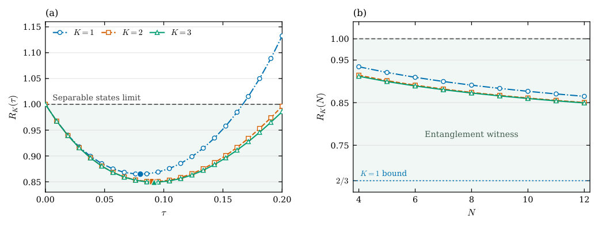
<figcaption class="paper-figure-caption"><b>Fig 1.</b> FIG. 1. Entanglement-enhanced shadow precision with OAT probes. (a) Shadow information coefficient RK(τ, N) = N/[3IK[|ψτ⟩]] at N = 12. Open markers show sampled twisting strengths; filled markers indicate minima. At fixed τ, all points use the same probe and encoding. (b) RK(N), with τ optimized separately for each (N, K) within 0 ≤τ ≤0.2. The gray dashed line denotes the separable-state limit; the shaded region RK &lt; 1 witnesses entanglement. The blue dotted line is the lower bound R1 ≥2/3, applicable only to K = 1. Both panels use θ0 = −0.5.</figcaption>
</figure>
</div>

<p><strong>Summary.</strong> This paper introduces a powerful quantum metrology protocol that estimates unknown parameters by analyzing local Pauli moments obtained through randomized measurements called classical shadows. It shows that this method is highly efficient, providing sample complexity guarantees and quantifying the enhancement achievable through quantum entanglement compared to classical limits.</p>
<p><strong>Why it may be interesting.</strong> The development of robust, circuit-based estimation protocols that bypass the need for full state tomography is crucial for practical quantum sensing and quantum computation applications.</p>
<details>
<summary>Detailed structure</summary>
<p><strong>Main problem.</strong> The paper addresses the challenge of quantum parameter estimation (metrology) where optimal measurements are hard to implement, proposing an alternative using accessible local measurements.</p>
<p><strong>Main result.</strong> A protocol combining Pauli moments estimated from classical shadows allows for efficient, circuit-based metrology, demonstrating that entanglement can provide a constant-factor enhancement over separable state limits.</p>
<p><strong>Method.</strong> It employs a method-of-moments estimator, utilizing Generalized Least Squares (GLS) to combine moment estimates derived from randomized local Pauli measurements (classical shadows).</p>
<p><strong>Model / system.</strong> The analysis focuses on qubit systems, using Pauli strings as accessible observables. The parameter $   heta$ is encoded in the state, often via collective phase encoding or Overhauser-Aharonov-Toth (OAT) probes.</p>
<p><strong>Key observables.</strong> Shadow Information ($I[
ho]$), Pauli expectation values ($\mu_P(	heta)$), Classical Fisher Information ($F_{cs}[
ho]$), and Quantum Fisher Information ($F_Q[
ho]$).</p>
<p><strong>Important parameters / regimes.</strong> Sample complexity ($n$), desired accuracy ($\eta$), failure probability ($\delta$), and the maximum Pauli weight ($K$).</p>
<p><strong>Assumptions / limitations.</strong> The unknown parameter $  heta$ is assumed to lie in a small neighborhood of a known working point $  heta_0$, and the protocol relies on the assumption that moment estimation via shadows is feasible.</p>
<p><strong>Figures summary.</strong> Figures compare the sample complexity for 'shadow' vs. 'direct' measurements, showing the shadow method's robustness and the enhancement provided by entanglement relative to separable benchmarks.</p>
<p><strong>Paper structure.</strong> The paper develops the theory by first introducing the method-of-moments approach using classical shadows, deriving the shadow information $I[
ho]$ to bound the variance. It then compares this to direct measurement strategies, establishing bounds related to the Quantum Fisher Information, and finally demonstrating entanglement enhancement using specific probes.</p>
</details>
<details>
<summary>Abstract</summary>
<p>Quantum metrology relies on observables that maximize information about the parameter of interest, but are often hard to access. We develop a protocol that combines Pauli moments estimated from a fixed ensemble of randomized local measurements into an optimized method-of-moments estimator. For local Pauli classical shadows, we derive the shadow information which determines estimator variance and sample-complexity guarantees. Identifying the separable-state sensitivity limit, we show that entanglement can lead to a constant-factor sensitivity enhancement, as illustrated with one-axis-twisted probes. This protocol allows for efficient circuit-based metrology without choosing an observable.</p>
</details>
<p><sub><a href="#top">↑ back to top</a></sub></p>

<p><a id="paper-2610.35467"></a></p>
<h3 id="electron-photon-entanglement-in-real-space-from-quantum-electrodynamics"><a href="http://arxiv.org/abs/2610.35467v1">Electron-photon entanglement in real space from quantum electrodynamics</a></h3>
<p><strong>Authors:</strong> Ivan P. Christov<br>
<strong>Type:</strong> theory · <strong>Category:</strong> other · <strong>PDF:</strong> <a href="https://arxiv.org/pdf/2610.35467v1">https://arxiv.org/pdf/2610.35467v1</a><br>
<strong>Analysis basis:</strong> full PDF text, analyzed in chunks
<strong>Topic relevance:</strong> <code>Keldysh / 2PI / non-Gaussian methods</code> <strong>2/5</strong> · <code>analog quantum simulation</code> <strong>2/5</strong> · <code>methods for driven-dissipative</code> <strong>2/5</strong> · <code>Tavis-Cummings &amp; cavity-many-emitter</code> <strong>1/5</strong> · <code>correlated / nonlocal dissipation</code> <strong>1/5</strong> · <code>driven-dissipative phase transition</code> <strong>1/5</strong> · <code>interference shaping light</code> <strong>1/5</strong> · <code>quantum measurements</code> <strong>1/5</strong></p>
<div class="figure-strip-hint">↔ Scroll figures horizontally</div>
<div class="paper-figures-scroll">
<figure class="paper-figure-card">
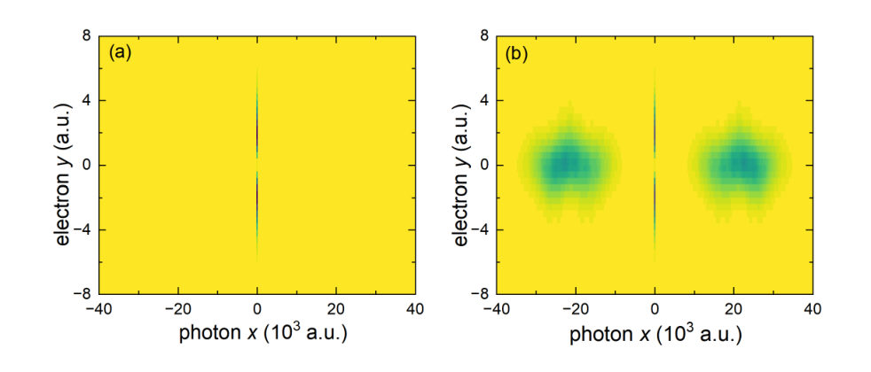
<figcaption class="paper-figure-caption"><b>Fig 1.</b> Figure 1. Joint probability density |𝐶𝐶1(𝑦𝑦, 𝑥𝑥)|2 of the electron at 𝑦𝑦 and the photon at 𝑥𝑥 in the one-photon component, on a common linear colour scale from yellow (zero) to dark blue (maximum), (a) at 𝑡𝑡= 0, before the pulse (ground state dressed by the field vacuum), and (b) at the end of the pulse. The weight of the one-photon component is 𝑊𝑊1 = 0.0062 in (a) and 0.175 in (b). The column at 𝑥𝑥= 0 is the vacuum field correlated with the electron; the two lobes in (b) are the two packets of the scattered photon moving along the guide.</figcaption>
</figure>
<figure class="paper-figure-card">

<figcaption class="paper-figure-caption"><b>Fig 2.</b> Figure 1(b) shows the joint distribution at the end of the pulse. The scattered photon has separated into two packets that move along the guide with the speed of light in opposite directions. They are centred at |𝑥𝑥| = 2.17 × 104, with a full width at half maximum of 1.4 × 104, of the order of 𝑐𝑐 times</figcaption>
</figure>
<figure class="paper-figure-card">

<figcaption class="paper-figure-caption"><b>Fig 3.</b> Figure 2. (a) Global von Neumann entropy of the electron–photon state. (b) One-photon weight 𝑊𝑊1 (green) and probability of the excited atom without a photon, 𝑊𝑊0 −|⟨𝑢𝑢0|𝑃𝑃0⟩|2 (blue), left axis; laser field 𝐹𝐹(𝑡𝑡) (black) and dipole moment ⟨𝑦𝑦⟩(𝑡𝑡) of the dressed atom (red), each divided by its maximum absolute value, right axis.</figcaption>
</figure>
<figure class="paper-figure-card">
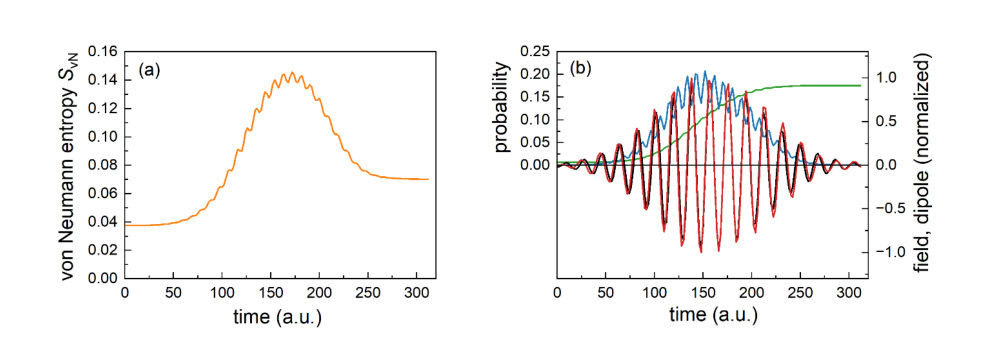
<figcaption class="paper-figure-caption"><b>Fig 4.</b> Figure 2(b) shows the laser field and the dipole moment ⟨𝑦𝑦⟩ of the dressed atom, each normalized to its maximum, together with the populations. The dipole follows the field cycle by cycle, with a small phase lag, and returns to zero with the pulse. This is the response of an atom driven off- resonance, which is polarized by the field but not left in an excited state. Accordingly, the probability that the atom is excited while no photon is present, 𝑊𝑊0 −|⟨𝑢𝑢0|𝑃𝑃0⟩|2, follows the envelope with a ripple at twice the laser frequency, since it is quadratic in the field, reaches 0.21 at the maximum of the pulse and falls to 3 × 10−4 at the end. The one-photon weight 𝑊𝑊1 grows during the pulse...</figcaption>
</figure>
<figure class="paper-figure-card">
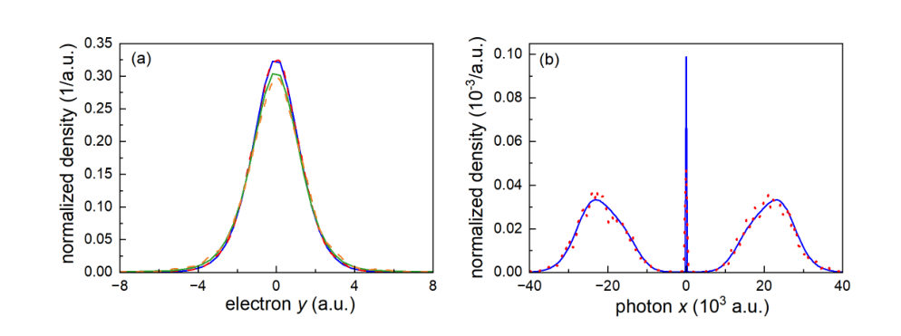
<figcaption class="paper-figure-caption"><b>Fig 5.</b> Figure 3. Normalized spatial profiles at the end of the pulse, from the solution of Eqs. (22) and (23) (solid lines) and from kernel density estimates over the walkers (broken lines). (a) Electron density with and without a photon (blue solid; estimate over all walkers, red dashed) and in the one-photon component, ∫|𝐶𝐶1|2𝑑𝑑𝑑𝑑 (green solid; estimate over the walkers with a photon, orange dashed). (b) Photon number density 𝑛𝑛(𝑥𝑥) (blue solid; estimate over the walkers with a photon, red dotted); the narrow peak at the atom is the photon cloud of the dressed vacuum. All profiles are</figcaption>
</figure>
</div>

<p><strong>Summary.</strong> This paper investigates electron-photon entanglement in real space by solving nonrelativistic QED equations for an atom in a waveguide. Using a numerical approach truncated at one photon, the authors track how entanglement evolves during a laser pulse. The results show that entanglement is transient, providing detailed spatial maps of local entanglement for both particles.</p>
<p><strong>Why it may be interesting.</strong> This work provides a detailed, real-space quantum description of light-matter interaction, which is fundamental to quantum optics and cavity QED, especially when non-perturbative effects (like avoiding the RWA) are necessary.</p>
<details>
<summary>Detailed structure</summary>
<p><strong>Main problem.</strong> The study focuses on quantifying electron-photon entanglement in real space and time, moving beyond standard semiclassical descriptions.</p>
<p><strong>Main result.</strong> The global entanglement is found to be transient, peaking during the laser pulse, while local entanglement exhibits distinct, opposite spatial patterns for the electron and photon.</p>
<p><strong>Method.</strong> The authors solve nonrelativistic QED using Fock's coupled equations in the length gauge, numerically simulating the time evolution on real-space grids.</p>
<p><strong>Model / system.</strong> The system models an electron interacting with a quantized electromagnetic field (photons) in a one-dimensional waveguide, driven by a short, off-resonant laser pulse.</p>
<p><strong>Key observables.</strong> Global and local von Neumann entropies ($S_v$), electron and photon probability densities, and the one-photon weight ($W_1$).</p>
<p><strong>Important parameters / regimes.</strong> Short off-resonant laser pulse parameters (e.g., Gaussian profile), the dipole coupling strength, and the waveguide geometry.</p>
<p><strong>Assumptions / limitations.</strong> The calculation is truncated at one photon, and the analysis utilizes the dipole approximation in the length gauge.</p>
<p><strong>Figures summary.</strong> Figures illustrate the joint probability density of the field, the time evolution of global entanglement entropy ($S_v$), and the spatial profiles of local electron and photon entropies at different times.</p>
<p><strong>Paper structure.</strong> The paper develops the Hamiltonian in the length gauge, derives the coupled equations (Fock's equations) in configuration space, and then numerically solves these equations to track entanglement dynamics during the laser pulse.</p>
</details>
<details>
<summary>Abstract</summary>
<p>We study the entanglement between an electron and the photon it scatters, resolved in real space and time. Starting from nonrelativistic QED in Fermi's oscillator representation, we write Fock's coupled equations for components with fixed photon number in the photon configuration space, in the length gauge, where the photon is created around the atom through a nonlocal kernel. Truncated at one photon, the equations are solved numerically without the rotating-wave approximation for a one-dimensional model atom in a waveguide with a single transverse mode and enhanced coupling. The atom is driven by a short, off-resonant laser pulse, with the electron and photon represented on real-space grids. The global electron-photon entanglement is largely transient. It peaks during the pulse and decreases as the polarized electron cloud returns to the core, leaving a state close to a product of the electron state and a superposition of the field vacuum with a single scattered photon. Local entanglement, obtained from walkers sampled across both photon-number components, exhibits opposite spatial patterns for the two particles. The electron entropy is smallest at the nucleus and maps the local strength of the dipole coupling, whereas the photon entropy is largest near the atom, where photons are created and absorbed, and smaller in the outgoing wave packets.</p>
</details>
<p><sub><a href="#top">↑ back to top</a></sub></p>

<p><a id="paper-2610.34637"></a></p>
<h3 id="symmetry-driven-in-situ-physical-adjoint-computing-beyond-reciprocity"><a href="http://arxiv.org/abs/2610.34637v1">Symmetry-driven in-situ physical adjoint computing beyond reciprocity</a></h3>
<p><strong>Authors:</strong> Cunshen Li, Rong Li, Jiongning Che, Cheng-Zhen Wang, Liang Huang<br>
<strong>Type:</strong> experiment · <strong>Category:</strong> disordered systems and neural networks · <strong>PDF:</strong> <a href="https://arxiv.org/pdf/2610.34637v1">https://arxiv.org/pdf/2610.34637v1</a><br>
<strong>Analysis basis:</strong> full PDF text, analyzed in chunks
<strong>Topic relevance:</strong> <code>analog quantum simulation</code> <strong>2/5</strong> · <code>methods for driven-dissipative</code> <strong>2/5</strong> · <code>quantum measurements</code> <strong>2/5</strong> · <code>Keldysh / 2PI / non-Gaussian methods</code> <strong>1/5</strong> · <code>correlated / nonlocal dissipation</code> <strong>1/5</strong> · <code>interference shaping light</code> <strong>1/5</strong> · <code>quantum optics experiment</code> <strong>1/5</strong></p>
<div class="figure-strip-hint">↔ Scroll figures horizontally</div>
<div class="paper-figures-scroll">
<figure class="paper-figure-card">
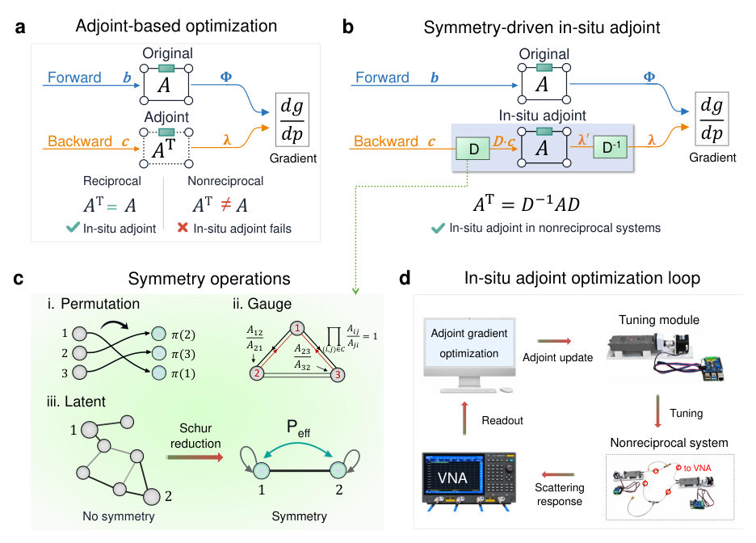
<figcaption class="paper-figure-caption"><b>Fig 1.</b> Figure 1: Symmetry-driven in-situ adjoint computing in nonreciprocal wave systems. a. The forward and adjoint fields satisfy AΦ = b and ATλ = c, respectively. In reciprocal systems, A = AT allows direct adjoint access, whereas in nonreciprocal networks, A ̸= AT generally prevents adjoint recovery by simply exchanging excitation and observation channels. b. A structured mapping DATD−1 = A enables the adjoint response to be reconstructed on the original hardware through transformed excitation and field recovery, without reversing the magnetic bias. c. Three mechanisms provide accessible transpose mappings: geometric permutation, complex gauge reweighting and latent symmetry revealed in the...</figcaption>
</figure>
<figure class="paper-figure-card">
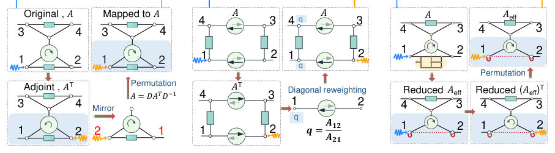
<figcaption class="paper-figure-caption"><b>Fig 2.</b> Figure 2: Accessible transpose mappings in nonreciprocal microwave networks. a- c, Photographs of the permutation symmetry (a), gauge symmetry (b) and latent symmetry (c) microwave networks. Yellow circles indicate accessible ports, green dots tunable phase shifters and blue circles nonreciprocal components. d, Mirror reflection maps the transposed dynamics onto the original network through a fixed geometric permutation, inducing the port exchange P12. e, Complex amplitude-phase reweighting provides the gauge symmetry mapping Dp = diag(q, 1, 1, q), where q ≃0.8720+0.0989i. f, Schur complement reduction reveals a latent transpose symmetry in the effective port dynamics, also described by...</figcaption>
</figure>
<figure class="paper-figure-card">
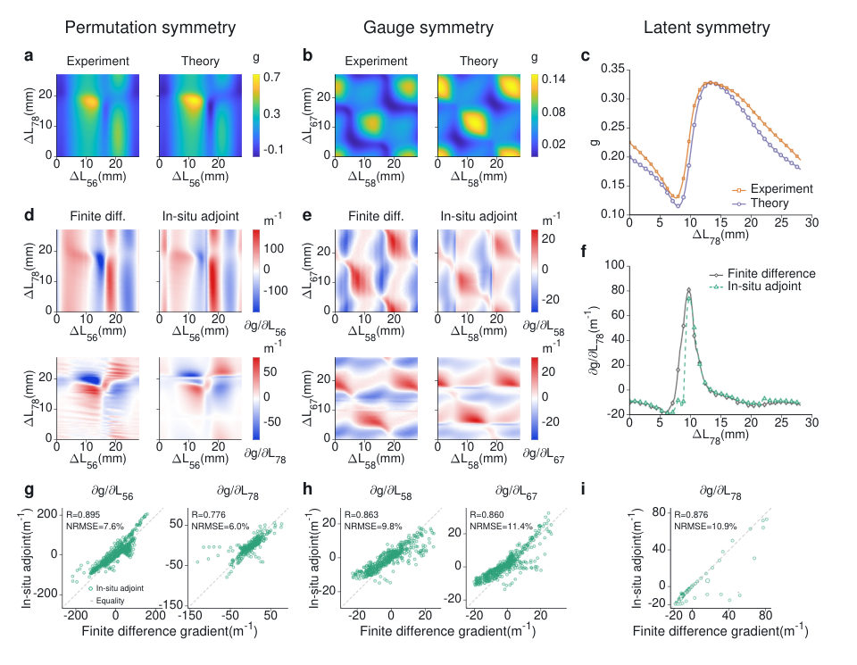
<figcaption class="paper-figure-caption"><b>Fig 3.</b> Figure 3: Experimental validation of in-situ adjoint gradients in nonreciprocal microwave network systems. a-c, Measured and theoretical objectives of the directional transmission contrast g = σ(|S21|2 −|S12|2) for the permutation symmetry (a), gauge symmetry (b) and latent symmetry (c) networks. d-f, In-situ adjoint gradients compared with finite difference estimates for the permutation symmetry (d), gauge symmetry (e) and latent symmetry (f) networks. g-i, Pointwise comparisons of in-situ adjoint gradients with independent finite difference estimates for the same networks, respectively. Dashed lines indicate equality. The in-situ adjoint gradients are stabilized as described in Methods. R...</figcaption>
</figure>
<figure class="paper-figure-card">
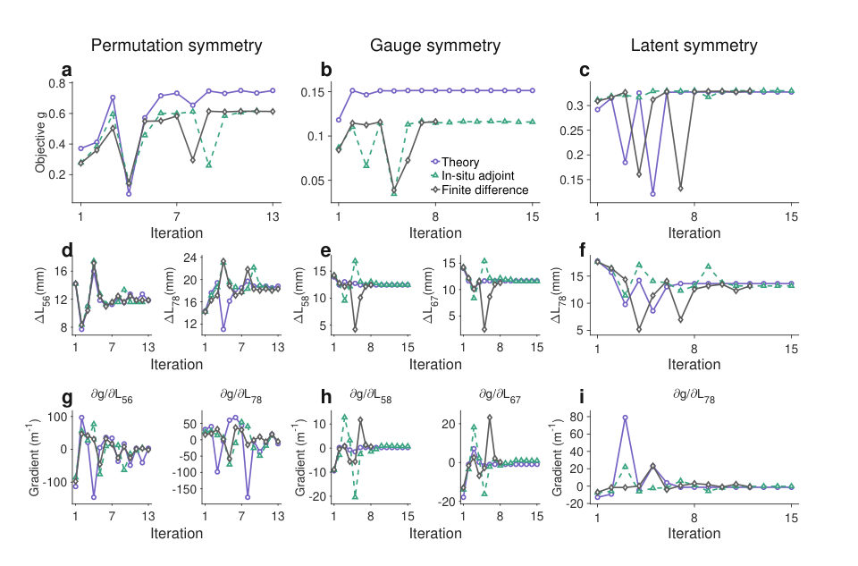
<figcaption class="paper-figure-caption"><b>Fig 4.</b> Figure 4: Closed-loop optimization using in-situ adjoint gradients in nonreciprocal microwave networks. a-c, Evolution of the directional transmission contrast g during optimization of the permutation symmetry (a), gauge symmetry (b) and latent symmetry (c) networks. d-f, Corresponding evolution of the tunable bond length adjustments ∆L. g-i, corresponding in-situ adjoint gradients along the optimization trajectories. Green triangles and grey diamonds denote in-situ adjoint and finite difference optimization, respectively; purple open circles denote an offline model based reference. Live optimization is performed on the same nonreciprocal hardware (in-situ). The in-situ adjoint gradients...</figcaption>
</figure>
</div>

<p><strong>Summary.</strong> This work presents a novel method, Sym-iPAC, to perform adjoint gradient calculations in nonreciprocal wave systems, overcoming the limitation that conventional adjoint methods require system reciprocity. By exploiting three types of structured transpose symmetries—geometric permutation, gauge reweighting, and latent symmetry—the authors enable closed-loop optimization directly on the original hardware using microwave networks. This establishes a general, experimentally accessible route for advanced wave control beyond reciprocal regimes.</p>
<p><strong>Why it may be interesting.</strong> While focused on microwave circuits, the core concept of using structured symmetries to bypass physical constraints (like reciprocity) to enable gradient computation is highly relevant to optimizing complex quantum control protocols in open quantum systems.</p>
<details>
<summary>Detailed structure</summary>
<p><strong>Main problem.</strong> The paper addresses the challenge of performing in-situ physical adjoint computing for wave control in nonreciprocal systems, where standard adjoint methods fail due to the lack of reciprocity.</p>
<p><strong>Main result.</strong> The authors successfully demonstrate Symmetry-driven in-situ Physical Adjoint Computing (Sym-iPAC) using three classes of experimentally accessible transpose symmetries, enabling closed-loop optimization.</p>
<p><strong>Method.</strong> They utilize structured transpose mappings (Permutation, Gauge reweighting, and latent symmetry from Schur reduction) to calculate adjoint gradients directly on the original nonreciprocal hardware.</p>
<p><strong>Model / system.</strong> The experiments are conducted using programmable nonreciprocal microwave networks, which are modeled by scattering matrices (S-matrices) that are generally non-symmetric.</p>
<p><strong>Key observables.</strong> Scattering matrix (S), adjoint gradients (d{g}/d{p}), and the objective function's evolution during closed-loop optimization.</p>
<p><strong>Important parameters / regimes.</strong> The three symmetry types (Permutation, Gauge, Latent) and the tunable parameters of the microwave components (e.g., $\Delta L_{78}$).</p>
<p><strong>Assumptions / limitations.</strong> The mapping D must be fixed throughout parameter tuning, and the method relies on finding experimentally accessible transpose symmetries.</p>
<p><strong>Figures summary.</strong> Figures illustrate the comparison between reciprocal and nonreciprocal systems, and show optimization trajectories and gradient comparisons across the three symmetry types (Permutation, Gauge, Latent).</p>
<p><strong>Paper structure.</strong> The paper introduces the problem of nonreciprocal adjoint computing, details the three symmetry-driven solutions (Permutation, Gauge, Latent), validates these symmetries using measured residuals, and finally demonstrates closed-loop optimization by comparing adjoint gradients against finite-difference methods.</p>
</details>
<details>
<summary>Abstract</summary>
<p>Nonreciprocity enriches wave control and information processing through directional transport, yet challenges conventional in-situ physical adjoint optimization, which relies on reciprocity to acquire adjoint responses. Here we demonstrate symmetry-driven in-situ physical adjoint computing (Sym-iPAC) in nonreciprocal systems, which enables access to adjoint responses on the original hardware through three classes of transpose symmetry: local geometric permutations, complex gauge reweighting, and latent symmetry in effective port dynamics revealed by Schur reduction. Experiments with programmable nonreciprocal microwave networks validate these transpose relations and yield adjoint gradients, enabling closed-loop optimization. These results establish experimentally accessible transpose symmetry as a route to in-situ physical adjoint computing beyond reciprocity.</p>
</details>
<p><sub><a href="#top">↑ back to top</a></sub></p>

<p><a id="paper-2610.33189"></a></p>
<h3 id="study-of-localization-properties-under-subsystem-periodic-driving"><a href="http://arxiv.org/abs/2610.33189v1">Study of localization properties under subsystem periodic driving</a></h3>
<p><strong>Authors:</strong> Arpita Goswami, Ranjan Modak, Shaon Sahoo<br>
<strong>Type:</strong> theory · <strong>Category:</strong> statistical mechanics · <strong>PDF:</strong> <a href="https://arxiv.org/pdf/2610.33189v1">https://arxiv.org/pdf/2610.33189v1</a><br>
<strong>Analysis basis:</strong> full PDF text, analyzed in chunks
<strong>Topic relevance:</strong> <code>analog quantum simulation</code> <strong>2/5</strong> · <code>methods for driven-dissipative</code> <strong>2/5</strong> · <code>Frenkel-Kontorova</code> <strong>1/5</strong> · <code>Keldysh / 2PI / non-Gaussian methods</code> <strong>1/5</strong> · <code>driven-dissipative phase transition</code> <strong>1/5</strong> · <code>non-equilibrium universality</code> <strong>1/5</strong> · <code>scars &amp; prethermalization</code> <strong>1/5</strong></p>
<div class="figure-strip-hint">↔ Scroll figures horizontally</div>
<div class="paper-figures-scroll">
<figure class="paper-figure-card">
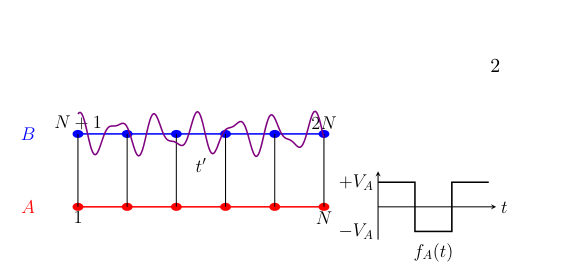
<figcaption class="paper-figure-caption"><b>Fig 1.</b> FIG. 1. Schematic diagram of the model system, represented by Hamiltonian of Eq. 1.</figcaption>
</figure>
<figure class="paper-figure-card">
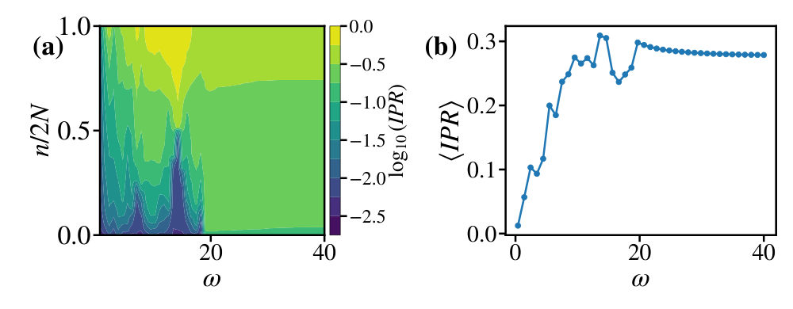
<figcaption class="paper-figure-caption"><b>Fig 2.</b> FIG. 2. (a) Contour plot of sorted log (IPR) as a function of normalized state index and ω, (b) plot of average IPR as a function of ω for VB = 6, t′ = 10, VA = 20 and total system size 2N = 1000.</figcaption>
</figure>
<figure class="paper-figure-card">
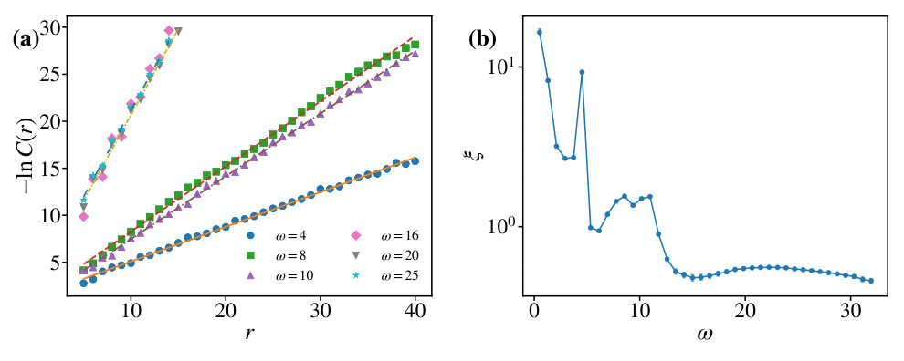
<figcaption class="paper-figure-caption"><b>Fig 3.</b> FIG. 3. (a) Plot of −ln C(r) as a function of r for different chosen values of ω, (b) Plot of ξ as a function of ω at VB = 6, t′ = 10 and VA = 20.</figcaption>
</figure>
<figure class="paper-figure-card">
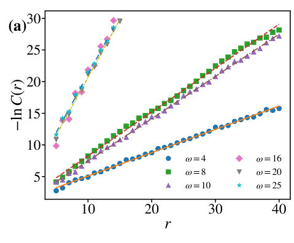
<figcaption class="paper-figure-caption"><b>Fig 4.</b> Figure 3(a) shows the distance dependence of the inter- leg coupling amplitude for representative driving frequen- cies, while Fig. 3(b) presents the extracted decay length ξ as a function of frequency. The results indicate that the spatial range of the cross-leg Floquet couplings de- pends strongly on the driving frequency. In particular, the growth of the decay length as the frequency is lowered signals the increasing importance of longer-range inter- leg matrix elements in the low-frequency regime. From Fig. 3(b), we roughly identify a crossover fre- quency ωcr ≃15, below which the inter-leg nonlocality becomes significant. For the same parameters, Fig. 2 shows that the localization...</figcaption>
</figure>
<figure class="paper-figure-card">
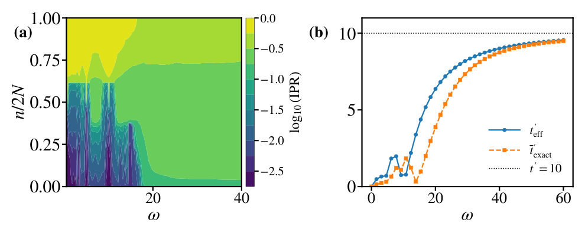
<figcaption class="paper-figure-caption"><b>Fig 5.</b> FIG. 4. (a) Contour plot of sorted log IPR as a function of normalized state index and ω obtained from the effective Hamiltonian in Eq. 26, (b) comparison between the analytically predicted effective rung hopping t′ eff and the average nearest-rung matrix element of the exact Floquet Hamiltonian,|t′|exact for VB = 6, t′ = 10, VA = 20 and tA = tB = 1</figcaption>
</figure>
</div>

<p><strong>Summary.</strong> This work explores the localization properties of a quantum ladder system driven periodically by only a subsystem. The authors find that such partial driving cannot fully delocalize a localized state, instead creating a mixed phase of coexisting localized and delocalized states. This demonstrates an alternative, subsystem-controlled route for modifying quantum transport properties.</p>
<p><strong>Why it may be interesting.</strong> It provides a concrete example of how localized states can be manipulated by local driving fields, offering insights into Floquet engineering beyond global driving protocols.</p>
<details>
<summary>Detailed structure</summary>
<p><strong>Main problem.</strong> The study investigates whether periodic driving of only a subsystem in a quantum lattice can induce complete delocalization, contrasting this with driving the entire system.</p>
<p><strong>Main result.</strong> Subsystem driving below a critical frequency cannot achieve full delocalization, instead leading to a mixed phase where localized and delocalized states coexist nonmonotonically.</p>
<p><strong>Method.</strong> The analysis employs Floquet theory to derive the effective Hamiltonian and uses exact numerical diagonalization of the Floquet operator to characterize the localization properties.</p>
<p><strong>Model / system.</strong> The model is a two-leg ladder system combining an Aubry-André chain and a clean tight-binding chain, subjected to a periodic square-wave drive applied only to one leg.</p>
<p><strong>Key observables.</strong> Fraction of delocalized states, state-averaged Inverse Participation Ratio (IPR), and the decay profile of inter-leg coupling amplitudes $C(r)$.</p>
<p><strong>Important parameters / regimes.</strong> Driving frequency ($\omega$), critical frequency ($\omega_c$), and the ratio of driving frequency to system parameters.</p>
<p><strong>Assumptions / limitations.</strong> The effective Hamiltonians are derived analytically in the high-frequency regime but are shown to predict the transition physics even in the moderate-frequency regime.</p>
<p><strong>Figures summary.</strong> Figures illustrate the schematic model setup and show the evolution of the IPR and the non-locality decay $C(r)$ as a function of driving frequency.</p>
<p><strong>Paper structure.</strong> The paper progresses from defining the driven Hamiltonian and applying Floquet theory to calculating localization diagnostics (IPR) and non-locality measures ($C(r)$), culminating in the demonstration of the mixed-phase behavior.</p>
</details>
<details>
<summary>Abstract</summary>
<p>Periodic driving provides a powerful route for controlling localization and engineering effective Hamiltonians in quantum systems. A localized one-dimensional Aubry-André chain can be driven into a fully delocalized phase when the entire system is driven below a critical frequency. Here, we ask whether such delocalization can be achieved by driving only a part of the system. We address this question using a two-leg ladder comprising an Aubry-André chain coupled to a periodically driven clean tight-binding chain. Exact numerical calculations show that, starting from a localized static ladder, subsystem driving below a critical frequency cannot achieve complete delocalization. Instead, a mixed phase emerges, with localized and delocalized states coexisting and the fraction of delocalized states varying nonmonotonically with the driving frequency. This behavior can be understood using local effective Hamiltonians. Although these effective Hamiltonians are derived analytically in the high-frequency regime, they can nevertheless predict the localization transition occurring in the moderate-frequency regime. In fact, by quantifying the emergent nonlocality of the Floquet Hamiltonian, we show that these effective Hamiltonians provide a valid description up to a crossover frequency that is lower than the critical frequency associated with the localization transition. Our results demonstrate an alternative route to Floquet engineering, in which the transport properties of a quantum lattice system can be modified by driving only a subsystem.</p>
</details>
<p><sub><a href="#top">↑ back to top</a></sub></p>

<p><a id="paper-2610.35627"></a></p>
<h3 id="local-koopman-modes-of-saddle-point-diffusions-exact-singular-functions-and-a-data-driven-estimator"><a href="http://arxiv.org/abs/2610.35627v1">Local Koopman modes of saddle-point diffusions: exact singular functions and a data-driven estimator</a></h3>
<p><strong>Authors:</strong> Xuehao Ding<br>
<strong>Type:</strong> theory · <strong>Category:</strong> statistical mechanics · <strong>PDF:</strong> <a href="https://arxiv.org/pdf/2610.35627v1">https://arxiv.org/pdf/2610.35627v1</a><br>
<strong>Analysis basis:</strong> full PDF text, analyzed in chunks
<strong>Topic relevance:</strong> <code>methods for driven-dissipative</code> <strong>2/5</strong> · <code>quantum measurements</code> <strong>2/5</strong> · <code>Keldysh / 2PI / non-Gaussian methods</code> <strong>1/5</strong> · <code>driven-dissipative phase transition</code> <strong>1/5</strong> · <code>non-equilibrium universality</code> <strong>1/5</strong> · <code>scars &amp; prethermalization</code> <strong>1/5</strong></p>
<div class="figure-strip-hint">↔ Scroll figures horizontally</div>
<div class="paper-figures-scroll">
<figure class="paper-figure-card">
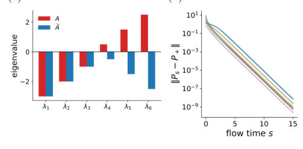
<figcaption class="paper-figure-caption"><b>Fig 1.</b> FIG. 1: Stabilization through Riccati flow. (a) Negative eigenvalues of A are kept in eA, while positive eigenvalues are flipped. (b) The Frobenius norm of the difference between Ps and the attractor P+ (Eq. (12)) decays in the Riccati flow. Different traces correspond to different initial conditions Σ′.</figcaption>
</figure>
<figure class="paper-figure-card">
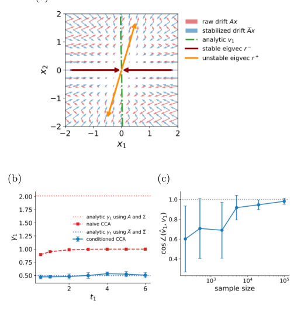
<figcaption class="paper-figure-caption"><b>Fig 2.</b> FIG. 2: Linear stochastic dynamical system. (a) Demonstration of a 2D linear saddle system with</figcaption>
</figure>
<figure class="paper-figure-card">
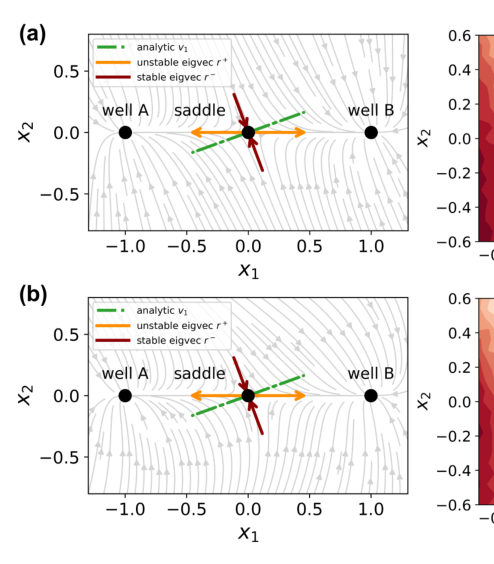
<figcaption class="paper-figure-caption"><b>Fig 3.</b> FIG. 3: Nonlinear stochastic dynamical system. (a) dx1</figcaption>
</figure>
</div>

<p><strong>Summary.</strong> This paper solves the mathematical challenge of finding slow dynamical modes near saddle points in stochastic systems by applying a Doob's h-transform to condition the process. This stabilization technique allows the derivation of exact, closed-form expressions for the Koopman singular functions. The results connect fundamental concepts from stochastic analysis, control theory, and modern generative modeling.</p>
<p><strong>Why it may be interesting.</strong> This work provides a rigorous, analytic framework to extract slow, collective dynamics (coherent sets) from complex, non-equilibrium stochastic processes, which is highly relevant for understanding reaction coordinates and transition states in physical systems.</p>
<details>
<summary>Detailed structure</summary>
<p><strong>Main problem.</strong> The paper develops a local, analytic theory for the slow, collective modes (singular functions of the stochastic Koopman operator) governing probability transport through saddle points in stochastic dynamical systems.</p>
<p><strong>Main result.</strong> By conditioning the dynamics on non-escape (using a Doob's h-transform), the singular modes are found in closed form using Hermite polynomials and are connected to transition-path theory and generative diffusion models.</p>
<p><strong>Method.</strong> The core method involves stabilizing the dynamics via a Doob's h-transform, which requires solving an algebraic Riccati equation to find the unique stabilizing solution. The resulting modes are then analyzed using canonical correlation analysis (CCA) on conditioned trajectories.</p>
<p><strong>Model / system.</strong> The system is a stochastic nonlinear dynamical system, modeled as a diffusion process around a saddle fixed point. The analysis focuses on the Koopman operator generated by the backward Kolmogorov operator.</p>
<p><strong>Key observables.</strong> Koopman singular functions ($\Phi_L^n, \Phi_R^n$), singular values ($\sigma_n$), the stabilizing solution to the Riccati equation ($P^+$), and the committor function.</p>
<p><strong>Important parameters / regimes.</strong> The escape rate ($  ext{Tr}(\Lambda^+)$) and the unstable eigenvalues ($\lambda_i^+$) are crucial parameters determining the decay rate of the slow modes.</p>
<p><strong>Assumptions / limitations.</strong> The analysis assumes that conditioning on non-escape (Doob's h-transform) correctly repairs the mathematical breakdown of the singular function approach at saddles. It also assumes the existence of a stationary Gaussian density for the stabilized process.</p>
<p><strong>Figures summary.</strong> Figures illustrate the stabilization process via the Riccati flow, showing eigenvalue flipping and the decay of the difference between the current covariance and the attractor covariance. Another figure compares the original and stabilized drift for a linear saddle system.</p>
<p><strong>Paper structure.</strong> The paper first identifies the failure of naive Koopman analysis at saddles. It then introduces the Doob's h-transform to stabilize the system, solving the Riccati equation to find the attractor. This leads to closed-form expressions for the singular functions and proposes a data-driven estimator using CCA on the stabilized trajectories.</p>
</details>
<details>
<summary>Abstract</summary>
<p>Coherent sets-regions of phase space that resist mixing-organize transport in stochastic dynamical systems and are encoded in the leading singular functions of the stochastic Koopman operator. These are typically computed numerically and globally; a local, analytic theory near a fixed point has been missing, although fixed points and the transitions between them organize the flow. We supply the local theory for a saddle, the transition state through which probability flows between basins. Naively the construction fails-probability escapes along unstable directions, the invariant measure is non-normalizable, the singular functions leave $L^2$, and singular values exceed one. We show that conditioning on non-escape (a Doob's $h$-transform) repairs this; that the required $h$ is the unique stabilizing solution of an algebraic Riccati equation; and that the resulting slow modes decay at the escape rate along the unstable manifold. We obtain these modes in closed form-products of Hermite polynomials in canonical coordinates times the $h$-function-and use their unitary structure to derive a data-driven estimator: canonical correlation analysis on conditioned trajectories. When a single unstable direction dominates, the leading mode is the reaction coordinate, locally recovering the stable manifold and committor of transition-path theory. The construction connects coherent sets to transition-path theory, to the stabilizing Riccati solution of linear control, and to the time-reversed dynamics of generative diffusion models.</p>
</details>
<p><sub><a href="#top">↑ back to top</a></sub></p>

<p><a id="paper-2610.35422"></a></p>
<h3 id="microscopic-derivation-of-stochastic-thin-film-equation-and-extensions-to-two-layer-and-evaporating-films"><a href="http://arxiv.org/abs/2610.35422v1">Microscopic Derivation of Stochastic Thin-Film Equation and Extensions to Two-Layer and Evaporating Films</a></h3>
<p><strong>Authors:</strong> Toby Kay, Serafim Kalliadasis<br>
<strong>Type:</strong> theory · <strong>Category:</strong> statistical mechanics · <strong>PDF:</strong> <a href="https://arxiv.org/pdf/2610.35422v1">https://arxiv.org/pdf/2610.35422v1</a><br>
<strong>Analysis basis:</strong> full PDF text, analyzed in chunks
<strong>Topic relevance:</strong> <code>Keldysh / 2PI / non-Gaussian methods</code> <strong>2/5</strong> · <code>methods for driven-dissipative</code> <strong>2/5</strong> · <code>correlated / nonlocal dissipation</code> <strong>1/5</strong> · <code>driven-dissipative phase transition</code> <strong>1/5</strong> · <code>non-equilibrium universality</code> <strong>1/5</strong> · <code>quantum measurements</code> <strong>1/5</strong></p>
<div class="figure-strip-hint">↔ Scroll figures horizontally</div>
<div class="paper-figures-scroll">
<figure class="paper-figure-card">
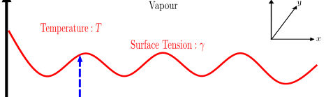
<figcaption class="paper-figure-caption"><b>Fig 1.</b> FIG. 1. Sketch of the profile geometry of a thin liquid film of height h. The streamwise and cross-stream coordinates are given by x and y, respectively, with the substrate coinciding with the (x,y) plane, and z denoting the outward-pointing coordinate normal to the substrate.</figcaption>
</figure>
<figure class="paper-figure-card">
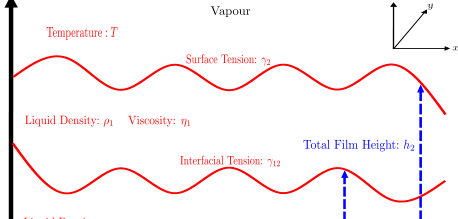
<figcaption class="paper-figure-caption"><b>Fig 2.</b> FIG. 2. Sketch of the profile geometry of a two-layer film with lower film height h1 and total film height h2. The coordinates x and y map the streamwise and cross-stream directions, with the substrate sitting at the (x,y) plane, and z defining the outward-pointing normal coor- dinate.</figcaption>
</figure>
</div>

<p><strong>Summary.</strong> This paper develops a novel, bottom-up theoretical framework by deriving the stochastic thin-film equation directly from the underlying N-particle Hamiltonian dynamics using fluctuating density-functional theory. This approach overcomes limitations of classical models by rigorously incorporating molecular thermal fluctuations. It provides a unified and flexible tool to model complex phenomena like multi-layer interfaces and evaporation in thin films.</p>
<p><strong>Why it may be interesting.</strong> The rigorous, first-principles derivation of stochastic dynamics from microscopic Hamiltonians is a powerful tool applicable to any system where thermal fluctuations are crucial, bridging the gap between microscopic dynamics and mesoscopic continuum theories.</p>
<details>
<summary>Detailed structure</summary>
<p><strong>Main problem.</strong> Classical thin-film hydrodynamics models fail to capture molecular-level thermal fluctuations governing nanoscale interfacial dynamics, and standard stochastic extensions lack a formal link to microscopic particle trajectories.</p>
<p><strong>Main result.</strong> The authors derive the stochastic thin-film equation rigorously from first-principles N-particle Hamiltonian dynamics, providing a flexible framework for complex scenarios like multi-layer interfaces and evaporation.</p>
<p><strong>Method.</strong> The derivation uses a bottom-up coarse-graining framework based on a generalized fluctuating dynamic density-functional theory (FDDFT).</p>
<p><strong>Model / system.</strong> The system is a thin liquid film governed by an N-particle Hamiltonian. The theoretical framework involves evolving mesoscopic observables via the Liouville equation, leading to the FDDFT formalism.</p>
<p><strong>Key observables.</strong> Mesoscopic observable field z_i(r,t), local film height h(u,t), and the structural entropy functional S[z].</p>
<p><strong>Important parameters / regimes.</strong> Temperature (k_B T), film thickness, and the ultraviolet wavenumber-cutoff (tau).</p>
<p><strong>Assumptions / limitations.</strong> The derivation relies on approximating the microcanonical average via the local equilibrium ensemble and invoking approximations like spatial locality and isotropic rotational invariance.</p>
<p><strong>Paper structure.</strong> The paper systematically develops the FDDFT formalism, deriving the stochastic equation by partitioning dynamics into reversible, dissipative, and fluctuating parts, and then extends this to model multi-layered and non-conserved dynamics.</p>
</details>
<details>
<summary>Abstract</summary>
<p>While classical thin-film hydrodynamics models widely govern macroscopic fluid layers, they fail to capture the molecular-level thermal fluctuations that dictate nanoscale interfacial dynamics. Standard stochastic extensions rely on the long-wave approximation of the continuum fluctuating Navier-Stokes equations; however, this top-down paradigm lacks a formal connection to microscopic particle trajectories and cannot readily accommodate complex, non-equilibrium boundary mechanisms. We resolve this limitation by deriving the stochastic thin-film equation directly from the exact underlying N-particle Hamiltonian dynamics. This is achieved via a systematic, bottom-up coarse-graining framework based on a generalized fluctuating dynamic density-functional theory. Crucially, this first principles formulation offers unparalleled flexibility, enabling the seamless integration of multi-layered interfaces and non-conserved dynamics such as evaporation. For these complex configurations, our framework rigorously yields entirely novel stochastic thin-film equations featuring emergent noise terms that encapsulate microscopic fluctuations missing from classical top-down models.</p>
</details>
<p><sub><a href="#top">↑ back to top</a></sub></p>

<p><a id="paper-2610.35301"></a></p>
<h3 id="spectral-fingerprint-recognition-of-mobile-signals-via-rydberg-atomic-sensors"><a href="http://arxiv.org/abs/2610.35301v1">Spectral fingerprint recognition of mobile signals via Rydberg atomic sensors</a></h3>
<p><strong>Authors:</strong> Yi-Ming Yin, Ming-Yao Cui, Ling-Yu Du, Jin-Hang Fang, Luan-Yi Wei, Bang Liu, Li-Hua Zhang, Kai Wang, Kai-Bin Huang, Dong-Sheng Ding<br>
<strong>Type:</strong> both · <strong>Category:</strong> other · <strong>PDF:</strong> <a href="https://arxiv.org/pdf/2610.35301v1">https://arxiv.org/pdf/2610.35301v1</a><br>
<strong>Analysis basis:</strong> full PDF text, analyzed in chunks
<strong>Topic relevance:</strong> <code>Rydberg arrays</code> <strong>2/5</strong> · <code>analog quantum simulation</code> <strong>2/5</strong> · <code>quantum optics experiment</code> <strong>2/5</strong> · <code>interference shaping light</code> <strong>1/5</strong> · <code>quantum measurements</code> <strong>1/5</strong></p>
<div class="figure-strip-hint">↔ Scroll figures horizontally</div>
<div class="paper-figures-scroll">
<figure class="paper-figure-card">
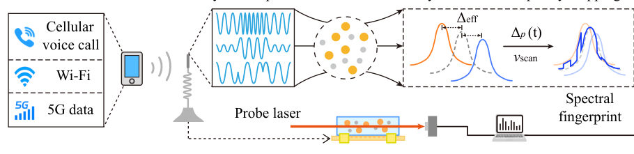
<figcaption class="paper-figure-caption"><b>Fig 1.</b> Figure 1. Illustration of the setup and physical diagram. (a) Energy-level diagram. The probe (780nm) and coupling (480nm) laser drive the transitions among the ground state 5S1/2, the intermediate state 5P3/2, and the Rydberg state 58D5/2. In the presence of phone signals, the Rydberg level 58D5/2 exhibits an energy shift ∆s governed by the ac Stark effect. (b) Experimental setup. Wireless signals are captured by an antenna, guided through a waveguide, and radiated onto the Rb vapor cell. The EIT transmission of the probe beam is detected by a photodetector (PD) to obtain spectral fingerprints. (c) Schematic workflow for signal recognition. Different transmission modalities (cellular voice...</figcaption>
</figure>
<figure class="paper-figure-card">
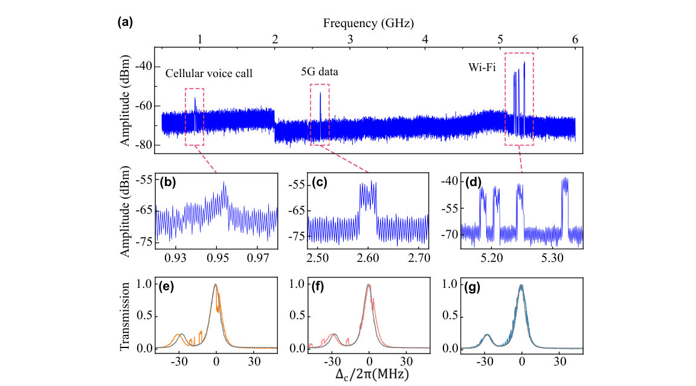
<figcaption class="paper-figure-caption"><b>Fig 2.</b> Figure 2. Construction of spectral fingerprints. (a) Broadband frequency spectrum containing representative cellular voice call, 5G, and Wi-Fi signals. (b–d) Zoomed-in views of the corresponding spectral regions, showing their distinct spectral structures and modulation characteristics. (e–g) Rydberg-EIT spectra measured under exposure to the three signals. Relative to the reference spectrum (gray), each signal induces a characteristic modification of the EIT line shape due to the unique spectral content of each signal. The resulting atomically encoded responses exhibit signal-dependent features that form reproducible optical spectral fingerprints, providing the basis for subsequent signal...</figcaption>
</figure>
<figure class="paper-figure-card">
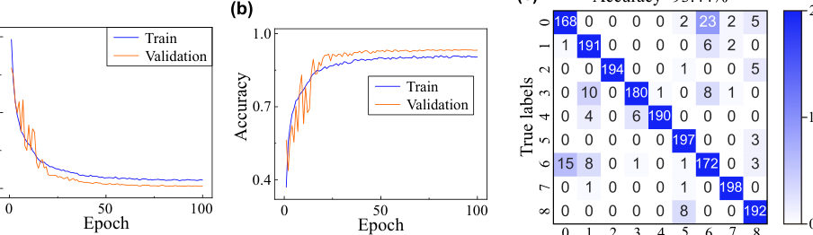
<figcaption class="paper-figure-caption"><b>Fig 3.</b> Figure 3. Recognition performance of wireless communication signals. (a,b) Evolution of training and validation loss and accuracy over epochs for the CNN classifier, with training (blue) and validation (orange) datasets. (c) Confusion matrix after 100 training epochs, showing an overall classification accuracy of 93.44%.</figcaption>
</figure>
<figure class="paper-figure-card">
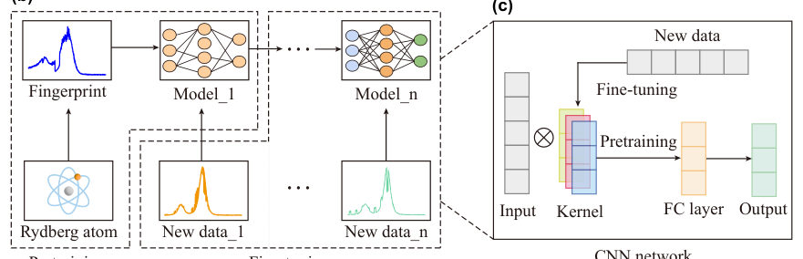
<figcaption class="paper-figure-caption"><b>Fig 4.</b> Figure 4. Spectral fingerprint variations and the model adaptation framework. (a) Representative atomic spectral fingerprints, including a reference fingerprint (blue) and three distorted variants exhibiting spectral shift (orange), weakened features (cyan), and added noise (red). (b) Schematic illustration of the model adaptation procedure, consisting of a pretraining stage based on reference spectral fingerprints and a subsequent fine-tuning stage using newly acquired datasets. (c) CNN architecture employed for fingerprint classification, where pretrained feature representations are further refined during fine- tuning to adapt to spectral variations in newly acquired data.</figcaption>
</figure>
<figure class="paper-figure-card">
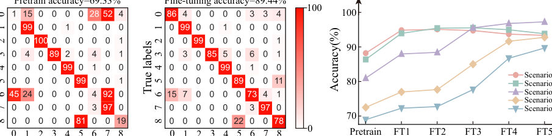
<figcaption class="paper-figure-caption"><b>Fig 5.</b> Figure 5. Fine-tuning enhances classification performance under spectral variations. (a) Comparison of confusion matrices for Scenario V before (left) and after (right) fine-tuning, with the overall classification accuracy improving from 69.33% to 89.44%. (b) Classification accuracies across five representative scenarios during progressive model adaptation, from the pretrained model (Pretrain) through five successive fine-tuning stages (FT1–FT5).</figcaption>
</figure>
</div>

<p><strong>Summary.</strong> This research proposes using Rydberg-atom sensors to create unique 'spectral fingerprints' of diverse mobile wireless signals like Wi-Fi and 5G. These quantum-derived spectra are then fed into a deep learning CNN for classification. The system shows promise for real-time, intelligent spectrum monitoring by robustly identifying signals despite environmental variations.</p>
<p><strong>Why it may be interesting.</strong> This work directly applies advanced concepts from quantum optics (Rydberg atoms, EIT) to a practical signal processing problem, demonstrating a novel quantum sensing modality for spectrum monitoring.</p>
<details>
<summary>Detailed structure</summary>
<p><strong>Main problem.</strong> The paper addresses the challenge of intelligently classifying real-world, non-stationary mobile wireless signals using quantum sensing techniques.</p>
<p><strong>Main result.</strong> A quantum-enabled framework combining Rydberg-atom EIT spectroscopy and deep learning achieved an initial classification accuracy of 93.44%, demonstrating robust real-time monitoring capability.</p>
<p><strong>Method.</strong> The method involves mapping the time-varying RF signal spectrum onto the optical transmission spectrum via Rydberg-atom EIT, which is then processed by a Convolutional Neural Network (CNN).</p>
<p><strong>Model / system.</strong> The physical system is a Rydberg-atom sensor utilizing Electromagnetically Induced Transparency (EIT) spectroscopy. The signal is encoded by off-resonant ac Stark coupling, creating a measurable spectral fingerprint.</p>
<p><strong>Key observables.</strong> The resulting EIT spectra, which serve as the 'spectral fingerprints' of the incident wireless signals.</p>
<p><strong>Important parameters / regimes.</strong> The classification accuracy (e.g., 93.44% baseline, 87.67% frame-level), the use of progressive fine-tuning to combat spectral drifts, and the specific CNN architecture parameters.</p>
<p><strong>Assumptions / limitations.</strong> The analysis assumes the RF field is far detuned from sensitive dipole-allowed transitions and relies on approximations like the locally stationary approximation for the Rydberg shift.</p>
<p><strong>Figures summary.</strong> Figures illustrate the experimental setup, the construction of spectral fingerprints by comparing signal-induced EIT spectra to a reference, and the CNN training process showing accuracy improvements.</p>
<p><strong>Paper structure.</strong> The paper progresses from establishing the physical basis (Rydberg-EIT sensing of RF fields) to developing the data pipeline (fingerprint generation from multiple signals) and finally implementing and validating the machine learning classification framework, including model adaptation strategies.</p>
</details>
<details>
<summary>Abstract</summary>
<p>Rydberg-atom sensors have emerged as a promising quantum technology for broadband radio-frequency detection owing to their intrinsic calibration, wide frequency coverage, and high sensitivity. However, their potential for intelligent identification of real-world wireless signals remains largely unexplored. Here, we demonstrate a quantum-enabled framework for mobile signal classification based on Rydberg electromagnetically induced transparency spectroscopy and deep learning. Three types of wireless emissions, including cellular voice call, Wi-Fi, and 5G signals from three commercial smartphone brands, are measured to construct a spectral-fingerprint dataset. A convolutional neural network trained on this dataset achieves an initial baseline classification accuracy of 93.44\%. To compensate for spectral drifts induced by temporal and environmental variations, a progressive fine-tuning strategy is employed to continuously adapt the pretrained model, enabling robust classification across diverse deployment scenarios. Furthermore, continuous real-time monitoring is demonstrated under dynamically varying wireless conditions, including cellular voice call, Wi-Fi, and their coexistence. The proposed system achieves an overall frame-level recognition accuracy of 87.67\% over a 60-s measurement. These results establish a pathway toward intelligent quantum radio-frequency sensing and highlight the potential of Rydberg-atom platforms for real-time wireless signal awareness and spectrum monitoring.</p>
</details>
<p><sub><a href="#top">↑ back to top</a></sub></p>

<p><a id="paper-2610.34586"></a></p>
<h3 id="spontaneous-magnetic-diode-effect-in-comath509mathtasmath510math"><a href="http://arxiv.org/abs/2610.34586v1">Spontaneous magnetic diode effect in Co$_{1/3}$TaS$_2$</a></h3>
<p><strong>Authors:</strong> Yining Hu, Taikang Chen, Jan Priessnitz, Zili Feng, Takashi Kurumaji, Linda Ye, Libor Šmejkal, Chunyu Mark Guo, Philip J. W. Moll<br>
<strong>Type:</strong> both · <strong>Category:</strong> other · <strong>PDF:</strong> <a href="https://arxiv.org/pdf/2610.34586v1">https://arxiv.org/pdf/2610.34586v1</a><br>
<strong>Analysis basis:</strong> full PDF text, analyzed in chunks
<strong>Topic relevance:</strong> <code>Keldysh / 2PI / non-Gaussian methods</code> <strong>2/5</strong> · <code>analog quantum simulation</code> <strong>2/5</strong> · <code>driven-dissipative phase transition</code> <strong>1/5</strong> · <code>methods for driven-dissipative</code> <strong>1/5</strong> · <code>non-equilibrium universality</code> <strong>1/5</strong> · <code>quantum measurements</code> <strong>1/5</strong></p>
<div class="figure-strip-hint">↔ Scroll figures horizontally</div>
<div class="paper-figures-scroll">
<figure class="paper-figure-card">
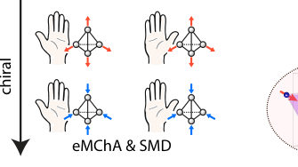
<figcaption class="paper-figure-caption"><b>Fig 1.</b> Fig. 1 a Crystal structure and magnetic order as independent sources of the symmetry breaking required for electrical magnetochiral anisotropy (eMChA) and spontaneous magnetic diode effect (SMD). A chiral structure alone (left and right hands) gives rise to eMChA, which requires an external magnetic field. Chiral magnetic order, represented by all-out (red) or all-in (blue) spins on an upright tetrahedron, adds a second handedness. In Co1/3TaS2, the chiral spin texture additionally enables an SMD at zero field. b Top: two structural enantiomers of Co1/3TaS2 related by mirror symmetry, labeled by the sign of their eMChA coefficient ±γcrys. Bottom: spin textures with opposite scalar spin...</figcaption>
</figure>
<figure class="paper-figure-card">
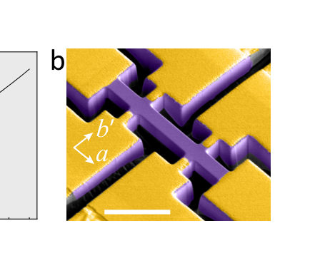
<figcaption class="paper-figure-caption"><b>Fig 2.</b> Fig. 2 a Temperature dependence of longitudinal resistivity. b False-color SEM image of the device for transport measurement. The b′ axis denotes the crystallographic b axis rotated by 30◦clockwise around +c axis in device plane. The current is applied along a direction. Scale bar 10 µm.</figcaption>
</figure>
<figure class="paper-figure-card">
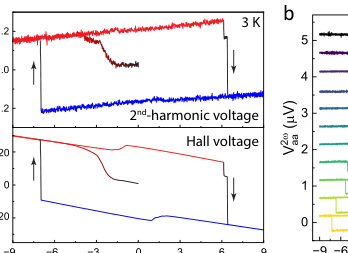
<figcaption class="paper-figure-caption"><b>Fig 3.</b> Fig. 3 a The second-harmonic longitudinal voltage and the Hall voltage measured at 3 K. b Field dependence of second-harmonic longitudinal voltage at differerent temperatures, measured from 3 K till 40 K. c Temperature dependence of second-harmonic longitudinal voltage amplitude (∆V 2ω aa ) and coercive field (Hc) extracted from b.</figcaption>
</figure>
<figure class="paper-figure-card">
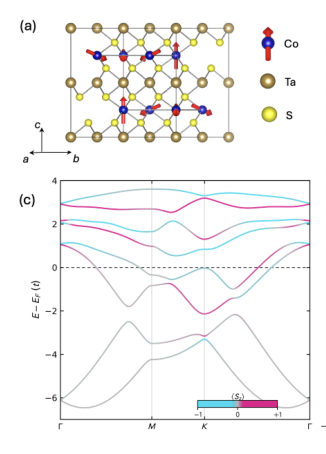
<figcaption class="paper-figure-caption"><b>Fig 4.</b> Fig. 4 Theory of nonlinear conductivity in a model based on the Co1/3TaS2. (a) Side view of the noncoplanar magnetic order in the Co1/3TaS2 crystal. (b) Minimal model based on a single layer of the hexagonal Co lattice with marked spin-orbit coupling hoppings. (c) Model band structure calculated with spin-orbit coupling. The cyan and magenta colouring corresponds to computed spin polarization along the out-of-plane direction. (d) Calculated diode effect in terms of the Drude contribution to the nonlinear conductivity σNLDrude aaa . (e)) The same as (d), but with reversed noncoplanar spin order.</figcaption>
</figure>
</div>

<p><strong>Summary.</strong> This work reports the observation of a spontaneous magnetic diode effect in $  ext{Co}_{1/3}   ext{TaS}_2$, a phenomenon where current flow asymmetry is dictated by the internal magnetic order. The effect is theoretically attributed to the coupling between noncoplanar spin textures and spin-orbit coupling, distinguishing it from field-dependent magnetochiral effects. This provides a new platform for magnetically controlled, non-reciprocal electronic transport.</p>
<p><strong>Why it may be interesting.</strong> The mechanism relies on intrinsic, spontaneous symmetry breaking driven by magnetic texture, which is a key concept in understanding topological and non-equilibrium quantum phenomena relevant to AMO physics.</p>
<details>
<summary>Detailed structure</summary>
<p><strong>Main problem.</strong> The paper demonstrates a spontaneous magnetic diode effect (SMD) in $ ext{Co}_{1/3}   ext{TaS}_2$, where the diode's directionality is set by internal magnetism rather than crystal structure.</p>
<p><strong>Main result.</strong> A pronounced, switchable non-reciprocal resistance (SMD) was observed, originating from the interplay of noncoplanar spin order and spin-orbit coupling, even when the net magnetization vanishes.</p>
<p><strong>Method.</strong> The study combines experimental measurements of second-harmonic voltage ($V_{2\omega}$) with theoretical calculations using a tight-binding model incorporating spin-orbit coupling.</p>
<p><strong>Model / system.</strong> The system is $ ext{Co}_{1/3}   ext{TaS}_2$, a magnetic intercalation compound with a triangular lattice structure exhibiting non-coplanar magnetic order. The theory models this using a spin Hamiltonian and a tight-binding model on the lattice.</p>
<p><strong>Key observables.</strong> Second-harmonic voltage ($V_{2\omega}$), anomalous Hall voltage ($V_H$), scalar spin chirality ($\chi_{	ext{local}}$), and the nonlinear Drude conductivity ($\sigma_{	ext{NLDrude}}$).</p>
<p><strong>Important parameters / regimes.</strong> The effect is linked to the low-temperature chiral magnetic order, vanishing at $T_{N2} \approx 26.5 	ext{ K}$.</p>
<p><strong>Assumptions / limitations.</strong> The micro-machining process preserves the intrinsic magnetism, and the analysis relies on separating the non-reciprocal $V_{2\omega}$ signal from other time-reversal odd effects like the Hall voltage.</p>
<p><strong>Figures summary.</strong> Figures illustrate the symmetry breaking required for the effect, show $V_{2\omega}$ hysteresis loops whose sign reverses with spin reversal, and present theoretical calculations of the nonlinear conductivity tensor components.</p>
<p><strong>Paper structure.</strong> The paper progresses from establishing the experimental observation of the SMD in $    ext{Co}_{1/3}   ext{TaS}_2$ (experiment), to developing a symmetry analysis and theoretical model incorporating SOC (theory), and finally confirming that the observed non-reciprocity is distinct from conventional magnetochiral effects (both).</p>
</details>
<details>
<summary>Abstract</summary>
<p>When electrons move through non-trivial spin textures in magnetic metals, conduction electrons couple to magnetic order through both their charge and their spin, acquiring non-trivial equations of motion and a dynamic spin polarization providing the foundation of spintronics. These mechanisms are, however, almost invariably reciprocal and the resistance a current encounters does not depend on its flow direction. Here we show that a chiral crystal lattice and an independently reversible chiral magnetic order together produce a diode whose forward direction is set by the magnetism rather than by the structure. In the triangular-lattice antiferromagnet Co$_{1/3}$TaS$_2$, whose chiral lattice hosts a chiral magnetic order of its own, independent handedness, we observe a pronounced nonreciprocal resistance. Unlike conventional electrical magnetochiral anisotropy, which is driven by an external magnetic field, our spontaneous magnetic diode effect arises from an internal noncoplanar spin texture with vanishing net magnetization. Symmetry analysis and model calculations show that the effect originates from the interplay of noncoplanar spin order and spin-orbit coupling, which generates a chiral, time-reversal-symmetry-breaking electronic response. Crucially, reversing the magnetic handedness reverses the sign of the nonreciprocal resistance, demonstrating magnetic control of the diode polarity.</p>
</details>
<p><sub><a href="#top">↑ back to top</a></sub></p>

<p><a id="paper-2610.33613"></a></p>
<h3 id="the-coherent-state-projection-eigenvalue-theorem"><a href="http://arxiv.org/abs/2610.33613v1">The Coherent State Projection Eigenvalue Theorem</a></h3>
<p><strong>Authors:</strong> Peter D. Drummond, Margaret D. Reid<br>
<strong>Type:</strong> theory · <strong>Category:</strong> other · <strong>PDF:</strong> <a href="https://arxiv.org/pdf/2610.33613v1">https://arxiv.org/pdf/2610.33613v1</a><br>
<strong>Analysis basis:</strong> full PDF text, analyzed in chunks
<strong>Topic relevance:</strong> <code>methods for driven-dissipative</code> <strong>2/5</strong> · <code>quantum measurements</code> <strong>2/5</strong> · <code>Keldysh / 2PI / non-Gaussian methods</code> <strong>1/5</strong> · <code>analog quantum simulation</code> <strong>1/5</strong> · <code>correlated / nonlocal dissipation</code> <strong>1/5</strong> · <code>driven-dissipative phase transition</code> <strong>1/5</strong></p>
<div class="figure-strip-hint">↔ Scroll figures horizontally</div>
<div class="paper-figures-scroll">
<figure class="paper-figure-card">
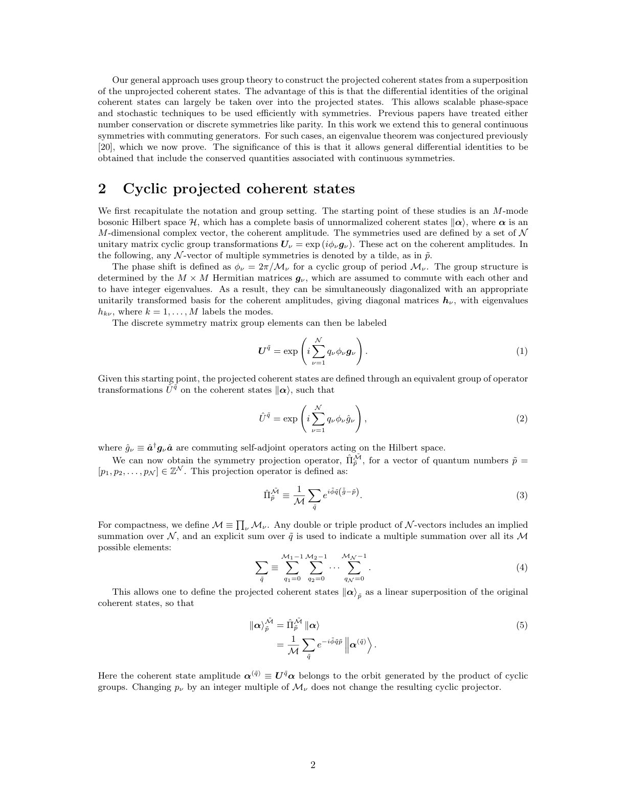
<figcaption class="paper-figure-caption"><b>Fig 1.</b> Low-resolution page preview, page 2</figcaption>
</figure>
<figure class="paper-figure-card">
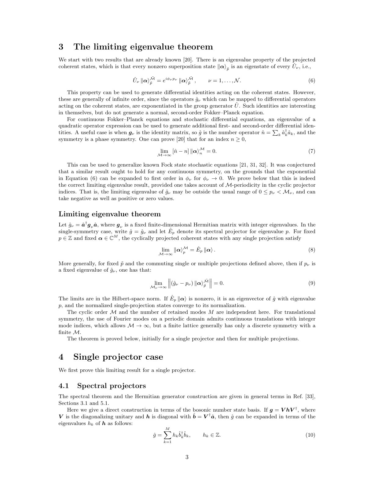
<figcaption class="paper-figure-caption"><b>Fig 2.</b> Low-resolution page preview, page 3</figcaption>
</figure>
<figure class="paper-figure-card">
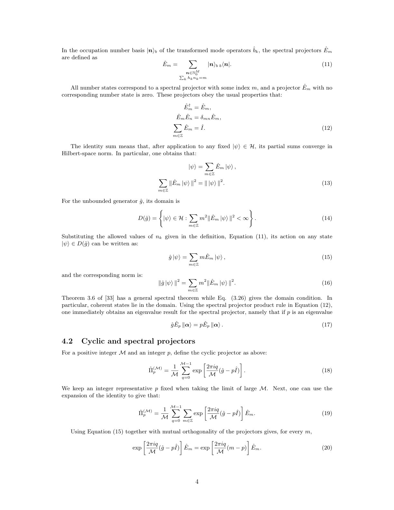
<figcaption class="paper-figure-caption"><b>Fig 3.</b> Low-resolution page preview, page 4</figcaption>
</figure>
<figure class="paper-figure-card">
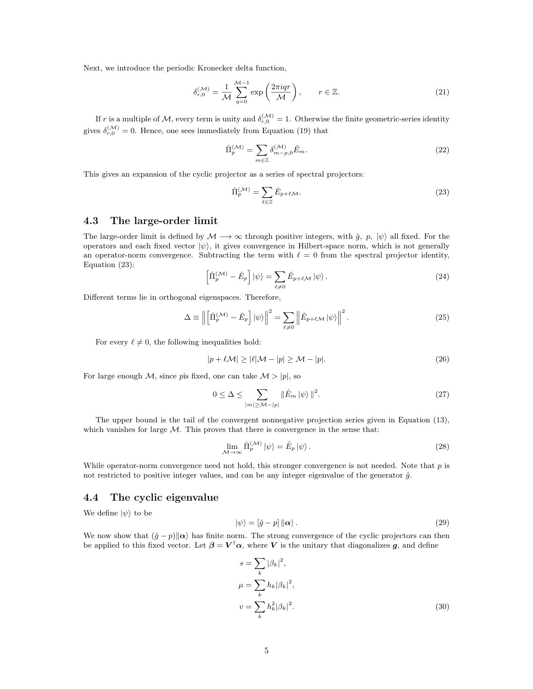
<figcaption class="paper-figure-caption"><b>Fig 4.</b> Low-resolution page preview, page 5</figcaption>
</figure>
<figure class="paper-figure-card">
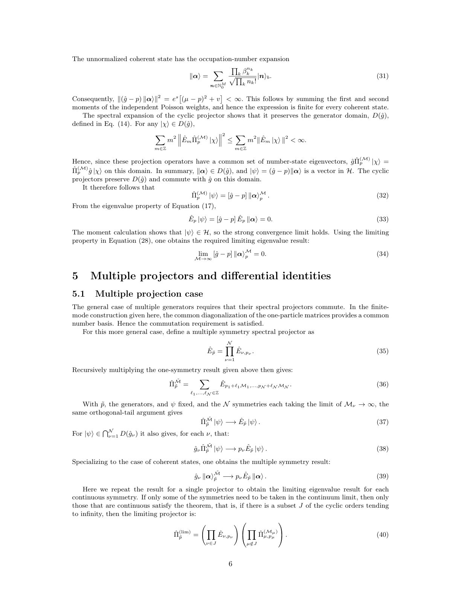
<figcaption class="paper-figure-caption"><b>Fig 5.</b> Low-resolution page preview, page 6</figcaption>
</figure>
</div>

<p><strong>Summary.</strong> This theoretical paper establishes an eigenvalue theorem for projected coherent states in bosonic systems possessing continuous symmetries. By analyzing the continuum limit of these projected states, the authors prove that they become eigenstates of the symmetry generator. This yields a crucial differential identity in phase-space, which can be used to improve numerical simulations of many-body quantum dynamics.</p>
<p><strong>Why it may be interesting.</strong> This work provides a powerful mathematical tool—the differential identity—that can be used to construct improved stochastic equations (like Fokker-Planck equations) for simulating bosonic quantum systems, thereby reducing numerical sampling errors.</p>
<details>
<summary>Detailed structure</summary>
<p><strong>Main problem.</strong> The paper aims to prove an eigenvalue theorem for the continuum limit of projected coherent states when continuous symmetries are present in bosonic quantum systems.</p>
<p><strong>Main result.</strong> In the continuum limit, the projected coherent states are shown to be eigenstates of the symmetry generating operator, yielding a differential identity in phase-space.</p>
<p><strong>Method.</strong> The authors utilize group theory to construct symmetry-projected coherent states and analyze their behavior in the limit of large projection orders ($M 	o \infty$).</p>
<p><strong>Model / system.</strong> The system is based on bosonic Hilbert space, using coherent states and incorporating symmetries generated by commuting Hermitian operators ($\hat{g}_{
u}$).</p>
<p><strong>Key observables.</strong> Eigenvalues of the symmetry generating operator ($\hat{g}_{
u}$), and the projected coherent states themselves.</p>
<p><strong>Important parameters / regimes.</strong> The projection order $M$ (taken to infinity for the continuum limit), and the symmetry eigenvalues $p_{
u}$.</p>
<p><strong>Assumptions / limitations.</strong> The initial states are assumed to be in the domain of the generator, and the convergence is analyzed in the Hilbert-space norm.</p>
<p><strong>Paper structure.</strong> The paper builds from defining the projected states using cyclic projectors, deriving the limiting identity in the continuum limit, and finally translating this into a differential identity applicable in phase-space representations.</p>
</details>
<details>
<summary>Abstract</summary>
<p>Recent papers have developed a cyclic symmetry projected extension for coherent state representations of bosonic Hilbert space. This extension can greatly reduce sampling errors in phase-space simulations of bosonic quantum systems that have symmetries. Here we prove an eigenvalue theorem for the continuum limit of the projected coherent states. Our intuitively appealing result is that in the continuum limit the projected coherent states are eigenstates of the symmetry generating operator. This result gives a differential identity in phase-space that includes the conserved eigenvalues. Detailed applications of these differential identities to obtaining improved Fokker-Planck and stochastic equations in many-body physics will be given elsewhere.</p>
</details>
<p><sub><a href="#top">↑ back to top</a></sub></p>

<p><a id="paper-2610.35161"></a></p>
<h3 id="the-mathematical-journey-of-spatial-reciprocity"><a href="http://arxiv.org/abs/2610.35161v1">The mathematical journey of spatial reciprocity</a></h3>
<p><strong>Authors:</strong> Chaoqian Wang, Xiang Li, Attila Szolnoki<br>
<strong>Type:</strong> theory · <strong>Category:</strong> statistical mechanics · <strong>PDF:</strong> <a href="https://arxiv.org/pdf/2610.35161v1">https://arxiv.org/pdf/2610.35161v1</a><br>
<strong>Analysis basis:</strong> full PDF text, analyzed in chunks
<strong>Topic relevance:</strong> <code>analog quantum simulation</code> <strong>2/5</strong> · <code>Keldysh / 2PI / non-Gaussian methods</code> <strong>1/5</strong> · <code>correlated / nonlocal dissipation</code> <strong>1/5</strong> · <code>driven-dissipative phase transition</code> <strong>1/5</strong> · <code>methods for driven-dissipative</code> <strong>1/5</strong> · <code>non-equilibrium universality</code> <strong>1/5</strong> · <code>quantum measurements</code> <strong>1/5</strong></p>
<div class="figure-strip-hint">↔ Scroll figures horizontally</div>
<div class="paper-figures-scroll">
<figure class="paper-figure-card">
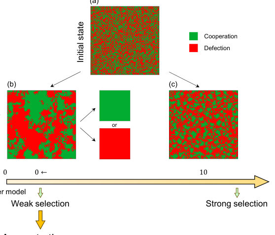
<figcaption class="paper-figure-caption"><b>Fig 1.</b> Fig. 1: Typical spatial patterns of evolutionary dynamics in structured populations under different selection strengths, where the dynamics in the weak selection limit can be accurately predicted. Here, the update rule is the DB rule; the two-player game uses the (R, S; T, P) payoff matrix, where R = 1, S = 0, T = 1.7, and P = 0; the population structure is a 100 × 100 lattice with periodic boundary conditions. (a) Initial configuration with cooperators and defectors randomly distributed. (b) Under weak selection (β = 10−2), the evolution pattern resembles neutral drift and rapidly converges to fixation. (c) Under relatively strong selection (β = 101), the evolution pattern displays a...</figcaption>
</figure>
<figure class="paper-figure-card">
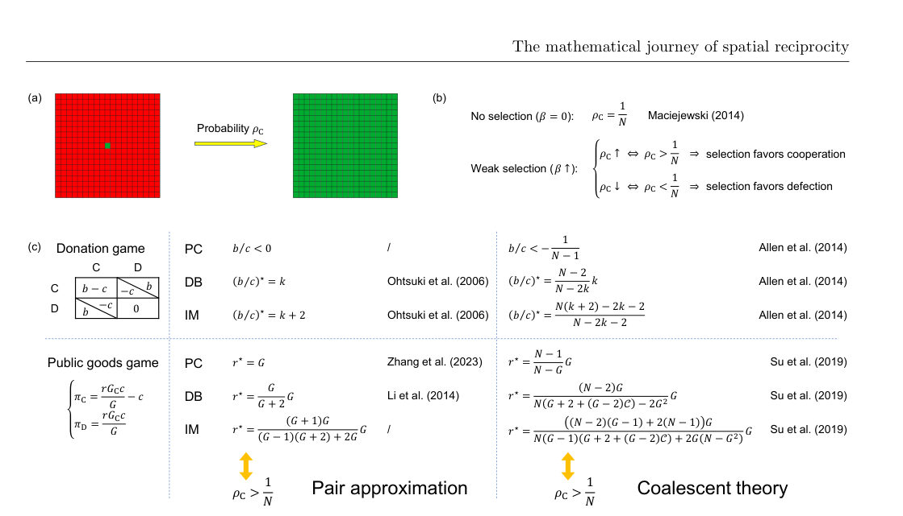
<figcaption class="paper-figure-caption"><b>Fig 2.</b> Fig. 2: (a) Initialization with a randomly positioned single cooperator within an all-defector population of size N. The system eventually reaches fixation in all-cooperator with probability ρC and all-defector with probability 1 −ρC. (b) In the absence of selection, ρC = 1/N [17]. When selection is introduced, if ρC tends to increase (ρC &gt; 1/N), the selection is said to favor cooperation. (c) Summary of theoretical conditions under which selection favors cooperation on regular graphs. We present the results for the donation game (b/c &gt; (b/c)⋆) and the public goods game (r &gt; r⋆) across three update rules (PC, DB, and IM) derived via pair approximation (in infinite populations) and...</figcaption>
</figure>
<figure class="paper-figure-card">
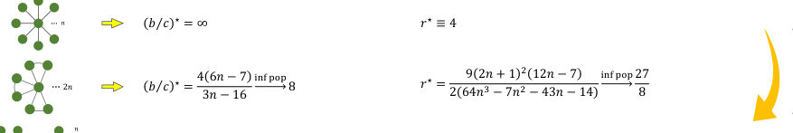
<figcaption class="paper-figure-caption"><b>Fig 3.</b> Fig. 3: Exact analytical solutions on heterogeneous networks can be obtained using coalescent theory, but the computational complexity increases explosively. Here, we present results for only three simple networks under the DB update rule: a star graph with 1 hub and n leaves (N = n + 1), a fan network with 1 hub and n two-node leaves (N = 2n + 1), and a joint star graph with 2 hubs, each with n leaves (N = 2n + 2). The exact cooperation conditions on these networks were first published by Allen et al. [9] in the donation game and by Wang et al. [78] in the public goods game.</figcaption>
</figure>
</div>

<p><strong>Summary.</strong> This paper provides a comprehensive review of the mathematical theories applied to spatial reciprocity and cooperation in structured populations. It details methods like Pair Approximation and Coalescent Theory, showing how they derive conditions for cooperation success. The work emphasizes that while these tools are powerful, they are constrained by computational complexity and underlying mathematical assumptions.</p>
<p><strong>Why it may be interesting.</strong> Although focused on evolutionary game theory, the mathematical machinery—analyzing non-equilibrium dynamics, stability conditions, and complex state evolution on structured graphs—shares conceptual overlap with analyzing open quantum systems or many-body dynamics on lattices.</p>
<details>
<summary>Detailed structure</summary>
<p><strong>Main problem.</strong> The paper reviews the mathematical theories used to understand the emergence and conditions for cooperation in structured populations governed by evolutionary game theory.</p>
<p><strong>Main result.</strong> It summarizes that while analytical tools like Pair Approximation and Coalescent Theory provide rigorous conditions for cooperation (e.g., b/c &gt; k), they are limited by computational complexity and specific structural assumptions.</p>
<p><strong>Method.</strong> The review synthesizes theoretical advancements, comparing analytical solutions derived from ODEs (Pair Approximation) against exact Markov process solutions (Coalescent Theory).</p>
<p><strong>Model / system.</strong> The model is evolutionary game theory played on structured populations represented by networks (graphs), where individuals update strategies (Cooperation/Defection) based on local interactions.</p>
<p><strong>Key observables.</strong> Fixation Probability (rho_C), which must exceed the neutral drift value (1/N) for cooperation to be favored.</p>
<p><strong>Important parameters / regimes.</strong> Selection Strength (beta), Benefit-to-Cost ratio (b/c), and the network degree (k).</p>
<p><strong>Assumptions / limitations.</strong> Pair approximation assumes infinite population and no triangle structure; Coalescent theory can become computationally intractable for large or complex networks.</p>
<p><strong>Figures summary.</strong> Figures illustrate spatial patterns of dynamics under selection strength and summarize theoretical conditions for cooperation success across different game rules and methods.</p>
<p><strong>Paper structure.</strong> The paper progresses by reviewing the theoretical landscape, detailing the mechanics of Pair Approximation and Coalescent Theory, comparing their strengths and weaknesses, and concluding with an outlook on achieving a universal theory of cooperation.</p>
</details>
<details>
<summary>Abstract</summary>
<p>Over the past three decades, evolutionary game theory in structured populations has witnessed explosive progress. Counterintuitive cooperative phenomena discovered in simulations have stimulated the development of rigorous mathematical theories to describe the underlying dynamics. In this paper, we review these theoretical advancements, including pair approximation and coalescent theory, which offer analytical solutions to evolutionary games on networks. We summarize the key results obtained by these theories, while also discussing their limitations, such as high computational complexity and constrained flexibility when applied to complex models. We therefore suggest that mathematical approaches provide a complementary tool for understanding cooperation in structured populations alongside simulations.</p>
</details>
<p><sub><a href="#top">↑ back to top</a></sub></p>

<p><a id="paper-2610.35790"></a></p>
<h3 id="information-theoretic-entropy-imaging-of-quantum-matter"><a href="http://arxiv.org/abs/2610.35790v1">Information-theoretic entropy imaging of quantum matter</a></h3>
<p><strong>Authors:</strong> Chen Wu, Leonard W. Cao, Lingyuan Lyu, Liam Cohen, Jiahui Nie, Can Uzundal, Yujia Hu, Quanjin Wang, Ziying Yan, Sneh Pancholi, Kenji Watanabe, Takashi Taniguchi, Feng Wang, Andrea F. Young, Tarun Grover, Monica T. Allen<br>
<strong>Type:</strong> both · <strong>Category:</strong> statistical mechanics · <strong>PDF:</strong> <a href="https://arxiv.org/pdf/2610.35790v1">https://arxiv.org/pdf/2610.35790v1</a><br>
<strong>Analysis basis:</strong> full PDF text, analyzed in chunks
<strong>Topic relevance:</strong> <code>analog quantum simulation</code> <strong>2/5</strong> · <code>driven-dissipative phase transition</code> <strong>2/5</strong> · <code>non-equilibrium universality</code> <strong>2/5</strong> · <code>quantum measurements</code> <strong>1/5</strong></p>
<div class="figure-strip-hint">↔ Scroll figures horizontally</div>
<div class="paper-figures-scroll">
<figure class="paper-figure-card">
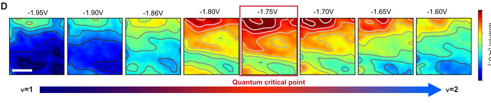
<figcaption class="paper-figure-caption"><b>Fig 1.</b> FIG. 1. Real-space imaging and compression analysis of a quantum Hall transition. (A) Schematic of the microwave impedance microscopy (MIM) measurement setup, in which a GHz excitation is coupled to a metallic tip to probe the local electronic compressibility of gated monolayer graphene. (B) Fixed-position MIM-Im gate sweeps between ν = −2 and 2 at B = 5 T (blue) and B = 8.5 T (red). The shaded region marks the ν = 1 →2 transition imaged in panel (D). (C) Compression analysis workflow: Each MIM(x, y) image (top panel) is serialized along a Hilbert space-filling curve (black line) and compressed using the LZ77 algorithm, in which repeated patterns are encoded as back-references to earlier...</figcaption>
</figure>
<figure class="paper-figure-card">
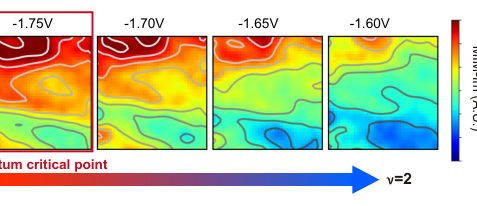
<figcaption class="paper-figure-caption"><b>Fig 2.</b> Fig. 2B shows the measured CID across the ν = 1 →2 transition, extracted from a sequence of MIM images col- lected as a function of gate voltage (shown in Fig. 1D). All encoding choices, including normalization, alphabet, serialization, and compressor are held fixed across the experimental series. Because the absolute CID value de- pends on these choices and on image size, we interpret relative changes within a fixed series rather than com- paring absolute values across unrelated datasets. One</figcaption>
</figure>
<figure class="paper-figure-card">
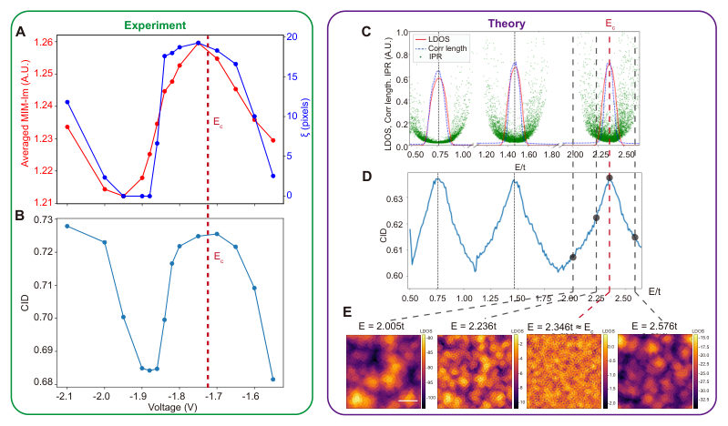
<figcaption class="paper-figure-caption"><b>Fig 3.</b> FIG. 2. Spatial information complexity peaks at the quantum Hall transition. (A-B) Experimental analysis of the ν = 1 →2 transition. (A): Spatially averaged MIM-Im signal (red, left axis) and the correlation length ξ extracted from the same image series (blue, right axis) versus gate voltage. Both are strongly enhanced near the transition. (B): CID calculated from the identical image series. The CID develops a pronounced maximum near Ec, coincident with the critical point Ec. (C-E) Disordered Hofstadter model calculation. (C): Spatially averaged local density of states (LDOS, red), correlation length (blue dashed), and inverse participation ratio (IPR, green) as functions of energy. (D):...</figcaption>
</figure>
<figure class="paper-figure-card">
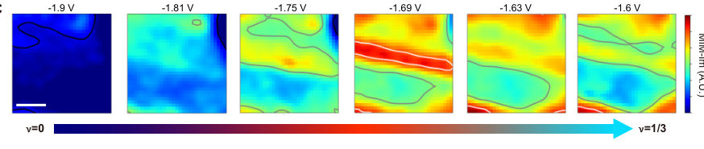
<figcaption class="paper-figure-caption"><b>Fig 4.</b> FIG. 3. Compression-based entropy imaging of fractional quantum Hall states in graphene. (A) Fixed-position MIM-Im gate sweep at B = 8.5 T spanning 0 &lt; ν &lt; 1, with incompressible features at ν = 1/3 and 2/3. (B) CID extracted from a series of MIM images using the continuous MIM signal (red) and a threshold-defined binary representation (blue). The CID is enhanced in the transition regions and suppressed upon entering the incompressible fractional quantum Hall (FQH) states. (C) Series of MIM-Im(x,y) images spanning the ν = 0 →1/3, showing the real-space evolution of the conductivity landscape. The scale bar is equivalent to 1 µm. (D) MIM-Im image near ν = 1/3. (E) The spatial CID(x,y)...</figcaption>
</figure>
<figure class="paper-figure-card">
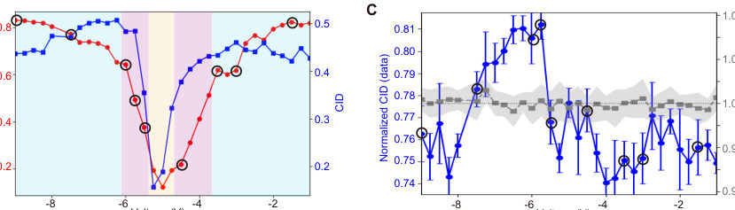
<figcaption class="paper-figure-caption"><b>Fig 5.</b> FIG. 4. Mapping the real-space complexity of a trivial band insulator: the gap at charge neutrality in a MoSe2/WS2 moir´e heterobilayer. (A) Series of representative MIM-Im spatial maps across a trivial gapped state, featuring a spatially-uniform conductive phase (−9 V), a mixed-phase crossover (−7.5 to −5.75 V), and a nearly featureless insulating state deep within the gap (−5.5 V). Scale bar: 1 µm. (B) Gate dependence of the spatially averaged MIM signal (MIM mean, red, left axis) and CID (blue, right axis) extracted from the series of MIM images. Circled dots correspond to the representative images in panel (A). (C) Normalized CID curve, calculated by dividing the CID of the raw data by...</figcaption>
</figure>
</div>

<p><strong>Summary.</strong> This paper introduces 'entropy imaging,' an information-theoretic technique that uses lossless compression to quantify the spatial complexity of quantum materials. By calculating the Computable Information Density (CID), the authors demonstrate that this measure robustly identifies quantum critical points and tracks phase transitions across diverse experimental platforms, proving its utility beyond simple correlation length measurements.</p>
<p><strong>Why it may be interesting.</strong> The use of information theory (Kolmogorov complexity) to diagnose critical points and phase transitions provides a powerful, model-independent diagnostic tool for characterizing emergent order in complex quantum many-body systems.</p>
<details>
<summary>Detailed structure</summary>
<p><strong>Main problem.</strong> The paper addresses the challenge of quantitatively measuring the intricate spatial organization and complexity within quantum materials, especially near phase transitions, which are often invisible to simple spatially averaged probes.</p>
<p><strong>Main result.</strong> The developed 'entropy imaging' technique, using Computable Information Density (CID), successfully quantifies this spatial complexity, revealing pronounced maxima at quantum critical points in both experimental and simulated systems.</p>
<p><strong>Method.</strong> The core method is 'entropy imaging,' which employs lossless data compression (like LZ77) on spatial images to derive the CID, an information-theoretic measure related to the Shannon entropy rate.</p>
<p><strong>Model / system.</strong> The work is applied to diverse systems, including graphene near quantum Hall transitions, $ ext{MoSe}_2/    ext{WS}_2$ moiré heterobilayers, magnetic materials (FeRh, skyrmions), and disordered theoretical models like the Hofstadter model.</p>
<p><strong>Key observables.</strong> Computable Information Density (CID), which quantifies spatial information complexity; Quantum Hall transition signatures; Correlation length ($\xi$).</p>
<p><strong>Important parameters / regimes.</strong> Quantum Hall filling factor ($
u$), magnetic field strength, temperature (millikelvin regime), and image block size ($b   imes \delta$) for coarse-graining.</p>
<p><strong>Assumptions / limitations.</strong> The CID is treated as a computable estimator of the spatial information complexity, and its relationship to thermodynamic entropy is asymptotic.</p>
<p><strong>Figures summary.</strong> Figures illustrate CID peaks coinciding with quantum Hall transitions in graphene, and show CID tracking phase transitions (e.g., $    ext{1T-TaS}_2$ NC-IC transition) and structural changes across various imaging modalities.</p>
<p><strong>Paper structure.</strong> The paper introduces the CID concept using quantum Hall transitions in graphene as the primary example, validates it against theoretical models (Hofstadter), and then demonstrates its broad applicability across multiple physical systems and imaging techniques (e.g., magnetic domain imaging, biofilm analysis).</p>
</details>
<details>
<summary>Abstract</summary>
<p>Phase transitions can generate intricate spatial organization invisible to spatially averaged probes, yet quantitative measures of this organization remain limited. Here we develop "entropy imaging," an information-theoretic technique that harnesses lossless compression to quantify spatial complexity, predictability, and order in quantum materials. Using this approach, emergent spatial textures can be imaged and converted into an experimentally-accessible observable: the computable information density (CID), a compression-based measure of information complexity that approaches the Shannon entropy rate in the large-system limit. Applied to millikelvin microwave impedance microscopy of graphene, the method reveals a pronounced maximum in the CID near quantum Hall transitions, a quantitative measure of the information-rich spatial organization of the critical landscape. A disordered Hofstadter model reproduces this behavior and shows that the CID can identify the quantum critical point from a sequence of images, without ensemble averaging over disorder realizations. The same framework tracks fractional quantum Hall transitions and resolves isolated fractional puddles that coexist with a disordered background. By contrast, the trivial band-edge crossover in a MoSe2/WS2 moiré heterobilayer exhibits qualitatively different behavior, suggesting that the pronounced CID enhancement observed at the quantum Hall critical point is not simply a generic feature of a conductive-insulating crossover. We further show that the geometric information encoded in CID is not reducible to a correlation length, and it can even distinguish spatial textures with identical multifractal statistics. Together, these results establish lossless compression as a framework for quantifying emergent spatial organization in quantum materials, with portability across imaging modalities and physical systems.</p>
</details>
<p><sub><a href="#top">↑ back to top</a></sub></p>

<p><a id="paper-2610.33659"></a></p>
<h3 id="linear-statistics-in-the-coulomb-gas-cumulants-beyond-rotational-invariance"><a href="http://arxiv.org/abs/2610.33659v1">Linear statistics in the Coulomb gas: cumulants beyond rotational invariance</a></h3>
<p><strong>Authors:</strong> Paul Bourgade, Pierre Le Doussal, Gregory Schehr<br>
<strong>Type:</strong> theory · <strong>Category:</strong> statistical mechanics · <strong>PDF:</strong> <a href="https://arxiv.org/pdf/2610.33659v1">https://arxiv.org/pdf/2610.33659v1</a><br>
<strong>Analysis basis:</strong> full PDF text, analyzed in chunks
<strong>Topic relevance:</strong> <code>Keldysh / 2PI / non-Gaussian methods</code> <strong>2/5</strong> · <code>Full counting statistics</code> <strong>1/5</strong> · <code>analog quantum simulation</code> <strong>1/5</strong> · <code>methods for driven-dissipative</code> <strong>1/5</strong> · <code>quantum measurements</code> <strong>1/5</strong></p>
<div class="figure-strip-hint">↔ Scroll figures horizontally</div>
<div class="paper-figures-scroll">
<figure class="paper-figure-card">
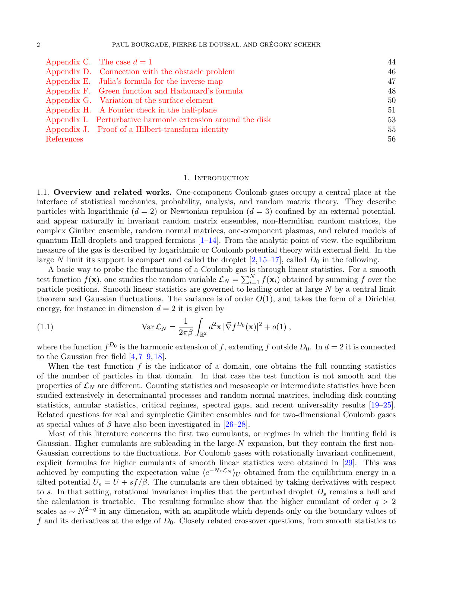
<figcaption class="paper-figure-caption"><b>Fig 1.</b> Low-resolution page preview, page 2</figcaption>
</figure>
<figure class="paper-figure-card">
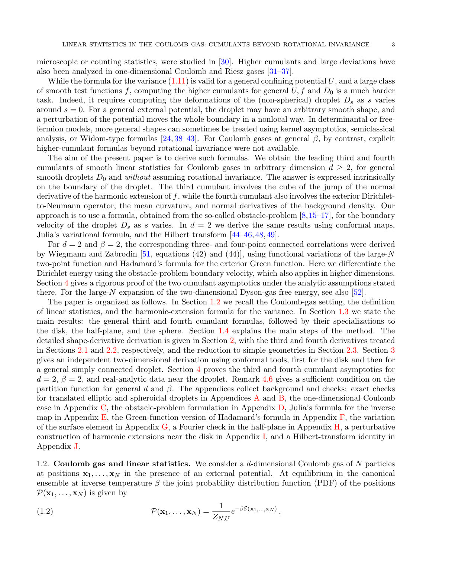
<figcaption class="paper-figure-caption"><b>Fig 2.</b> Low-resolution page preview, page 3</figcaption>
</figure>
<figure class="paper-figure-card">
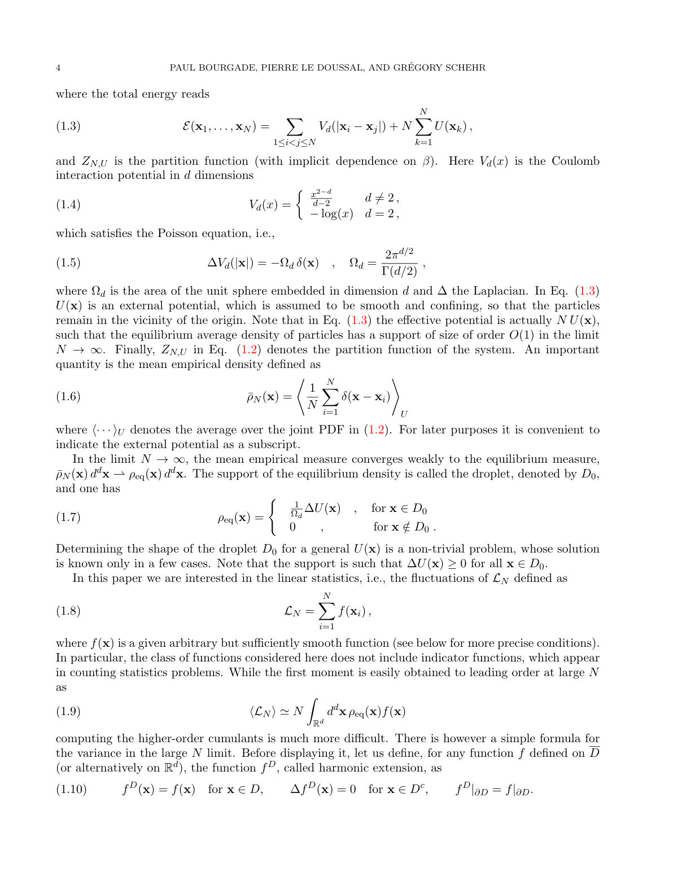
<figcaption class="paper-figure-caption"><b>Fig 3.</b> Low-resolution page preview, page 4</figcaption>
</figure>
<figure class="paper-figure-card">
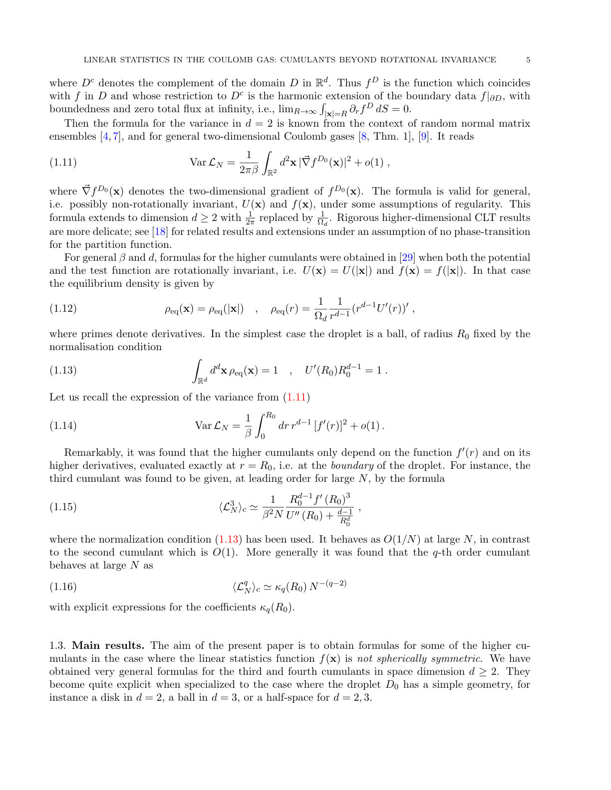
<figcaption class="paper-figure-caption"><b>Fig 4.</b> Low-resolution page preview, page 5</figcaption>
</figure>
<figure class="paper-figure-card">
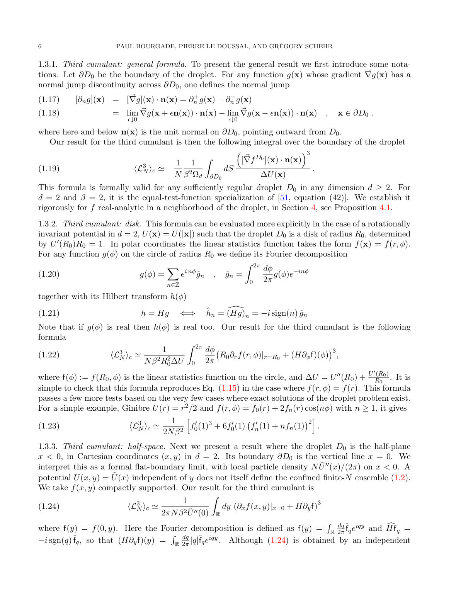
<figcaption class="paper-figure-caption"><b>Fig 5.</b> Low-resolution page preview, page 6</figcaption>
</figure>
</div>

<p><strong>Summary.</strong> This work provides advanced mathematical formulas for calculating the third and fourth cumulants of linear statistics in the Coulomb gas model. By using techniques involving boundary shape derivatives, the authors derive general results applicable even when the system lacks rotational symmetry. This advances the understanding of higher-order correlations in interacting particle systems in the large-N limit.</p>
<p><strong>Why it may be interesting.</strong> While focused on classical statistical mechanics, the rigorous mathematical techniques involving boundary shape derivatives and variational principles are highly relevant to understanding fluctuations and correlation functions in complex many-body quantum systems.</p>
<details>
<summary>Detailed structure</summary>
<p><strong>Main problem.</strong> The paper derives explicit, general formulas for the leading third and fourth cumulants of smooth linear statistics in the Coulomb gas model, extending results beyond the assumption of rotational invariance.</p>
<p><strong>Main result.</strong> The higher cumulants are expressed as intrinsic boundary integrals over the equilibrium droplet, involving geometric quantities like the mean curvature and operators like the Dirichlet-to-Neumann operator.</p>
<p><strong>Method.</strong> The derivation utilizes the tilted potential method, analyzing the shape derivatives of the Dirichlet energy, which is interpreted as the infinitesimal motion of the free boundary.</p>
<p><strong>Model / system.</strong> The system is a classical Coulomb gas of N particles in dimension d&gt;=2, confined by an external potential U. The physics is studied in the large-N limit, where the particle density forms a compact support called the droplet.</p>
<p><strong>Key observables.</strong> Linear statistics $\mathcal{L}_N = \sum_{i=1}^N f(\mathbf{x}_i)$, and its higher cumulants (third and fourth).</p>
<p><strong>Important parameters / regimes.</strong> Large N limit, dimension d&gt;=2, the external potential U, and the test function f.</p>
<p><strong>Assumptions / limitations.</strong> The general formulas are derived without assuming rotational invariance, relying on the obstacle-problem formulation for boundary motion.</p>
<p><strong>Figures summary.</strong> Not specified (Notes describe mathematical formulas and derivations rather than figure content).</p>
<p><strong>Paper structure.</strong> The paper proceeds with general derivations using the tilted potential, followed by specialized calculations for specific geometries (disk, half-plane, sphere) using conformal mapping tools, and concludes with rigorous proofs of identities.</p>
</details>
<details>
<summary>Abstract</summary>
<p>We consider a classical Coulomb gas of $N$ particles in dimension $d\geq2$, confined by a general external potential $U$ in the large-$N$ limit. In that limit the density of particles has a compact support called the droplet. We study smooth linear statistics ${\mathcal L}_N=\sum_{i=1}^N f({\bf x}_i)$ at large $N$. While the leading variance of ${\mathcal L}_N$ is by now well understood in many settings, much less is known about higher cumulants. When $f({\bf x})=f(|{\bf x}|)$ and the potential is rotationally invariant, these cumulants were computed recently at leading order. We derive explicit formulas for the leading third and fourth cumulants for general smooth droplets, without assuming that either the potential or the test function is radial. The answers are expressed as intrinsic boundary integrals over the equilibrium droplet. The third cumulant depends on the cube of the jump of the normal derivative of the harmonic extension of $f$, while the fourth cumulant also involves the exterior Dirichlet-to-Neumann operator, the mean curvature of the boundary, and normal derivatives of the background density. Our derivation uses the tilted potential $U_s=U+s f/β$, the associated deformation of the droplet, and shape derivatives of the Dirichlet energy. This deformation has a natural interpretation as the infinitesimal motion of the free boundary in the obstacle-problem formulation of the equilibrium measure. Our formulas extend previous studies by Wiegmann and Zabrodin in two dimensions for $β=2$. In their setting, we provide a rigorous proof of the limiting third and fourth cumulants, supporting the proposed formulas for general Coulomb gases. We specialize the general formulas to the disk, the half-plane and the sphere, and check them against exactly solvable non-radial deformations, including translated elliptic droplets in $d=2$ and spheroidal deformations in $d=3$.</p>
</details>
<p><sub><a href="#top">↑ back to top</a></sub></p>

<p><a id="paper-2610.35507"></a></p>
<h3 id="maximization-of-nuclear-fusion-reactivity-via-optimal-energy-distributions"><a href="http://arxiv.org/abs/2610.35507v1">Maximization of nuclear fusion reactivity via optimal energy distributions</a></h3>
<p><strong>Authors:</strong> Roberto Onofrio, Kamel Ourabah, Carlo Presilla<br>
<strong>Type:</strong> theory · <strong>Category:</strong> statistical mechanics · <strong>PDF:</strong> <a href="https://arxiv.org/pdf/2610.35507v1">https://arxiv.org/pdf/2610.35507v1</a><br>
<strong>Analysis basis:</strong> full PDF text, analyzed in chunks
<strong>Topic relevance:</strong> <code>Keldysh / 2PI / non-Gaussian methods</code> <strong>2/5</strong> · <code>methods for driven-dissipative</code> <strong>2/5</strong> · <code>non-equilibrium universality</code> <strong>1/5</strong></p>
<div class="figure-strip-hint">↔ Scroll figures horizontally</div>
<div class="paper-figures-scroll">
<figure class="paper-figure-card">
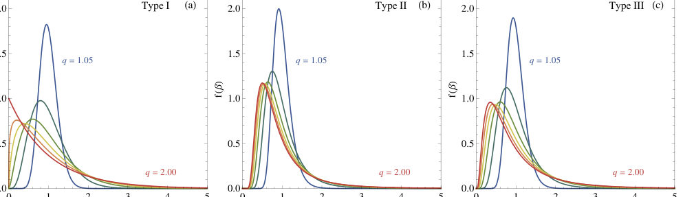
<figcaption class="paper-figure-caption"><b>Fig 1.</b> Figure 1. Probability distributions f(β) for the three representative superstatistics, parametrized by q, shown for different values, starting from the leftmost peak at q = 2.0 and going to the rightmost peak at q = 1.05, with intermediate values of q = 1.20,1.40,1.60,1.80. In the limit q →1, f(β) collapses to a Dirac δ distribution centered at β0, and the corresponding energy distribution reduces to the MB form.</figcaption>
</figure>
<figure class="paper-figure-card">
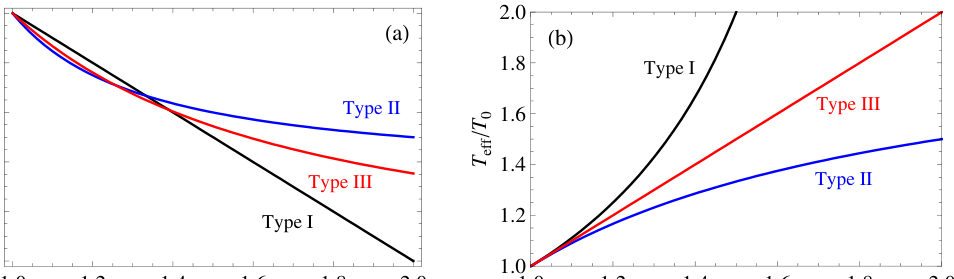
<figcaption class="paper-figure-caption"><b>Fig 2.</b> Figure 2. (a) Position of the maximum of f(β), βpeak, normalized to β0, as a function of the universal parameter q for the three superstatistics. (b) Effective temperature, normalized to the temperature T0 of the MB energy distribution with the same average energy, versus q for the same three superstatistics.</figcaption>
</figure>
<figure class="paper-figure-card">
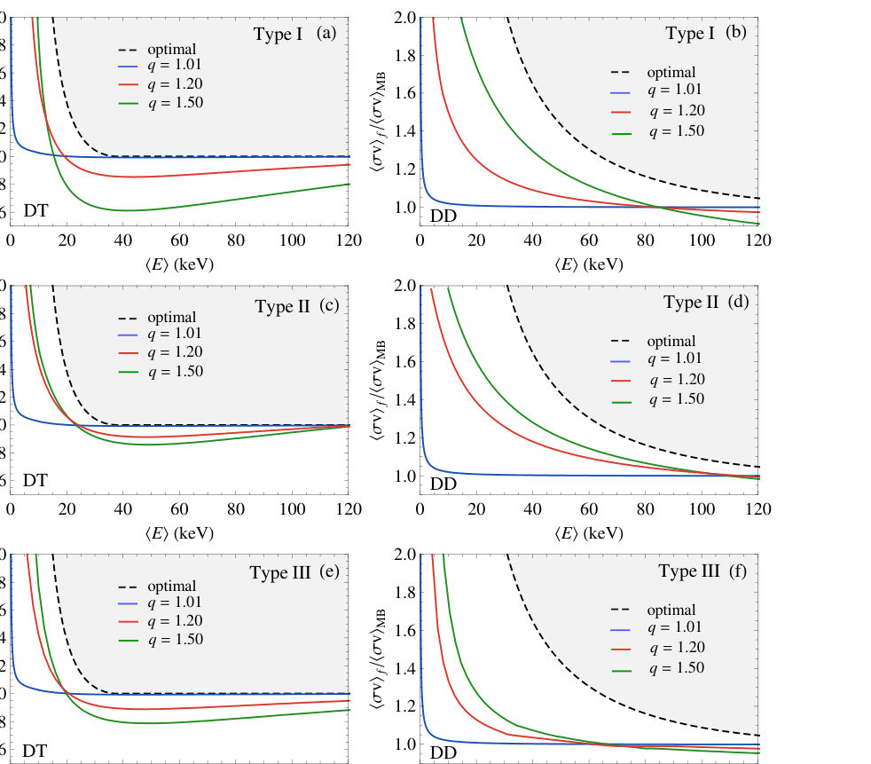
<figcaption class="paper-figure-caption"><b>Fig 3.</b> Figure 3. Gain factor versus the average energy ⟨E⟩for the three representative superstatistics, type I (top plots), type II (middle), and type III (bottom), each shown for three different values of q, and the exclusion region (in gray) for the optimal gain according to the concave envelope, delimited by the dashed line. The cases on the left are relative to DT fusion; the cases on the right are relative to DD fusion.</figcaption>
</figure>
<figure class="paper-figure-card">
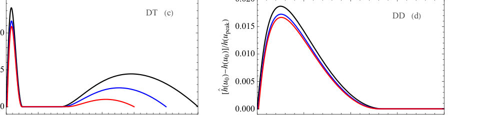
<figcaption class="paper-figure-caption"><b>Fig 4.</b> Figure 4. Function h(u0) representing the empirical reactivity calculated from [33] (blue solid line) and its concave envelope ˆh(u0) (red dashed line) for (a) DT fusion and (b) DD fusion. In both cases, the functions are normalized to the peak value of h(u) achieved at point B: upeak = 66.157 keV for DT and upeak = 1.216 MeV for DD (point not shown). In (a), the boundary points of the left and right regions where ˆh(u0) &gt; h(u0) are u(l) 1 = umin = 0 keV, u(l) 2 = 25.652 keV (point A), u(r) 1 = 85.386 keV (point C), and u(r) 2 = umax = 300 keV. Conversely, (b)</figcaption>
</figure>
</div>

<p><strong>Summary.</strong> This work theoretically maximizes nuclear fusion reactivity by optimizing the energy distribution of colliding ions beyond the standard Maxwell-Boltzmann assumption. It proves that the optimal distribution switches between single and bimodal forms depending on the energy regime's concavity. The findings suggest that engineered bimodal distributions can significantly boost fusion reactivity for practical plasma applications.</p>
<p><strong>Why it may be interesting.</strong> While focused on fusion, the core mathematical technique—optimizing expectation values over non-standard energy distributions (superstatistics) when the underlying function is non-concave—is highly relevant to non-equilibrium statistical mechanics in complex quantum systems.</p>
<details>
<summary>Detailed structure</summary>
<p><strong>Main problem.</strong> The paper investigates how optimizing the energy probability distribution of colliding ions can maximize the nuclear fusion reactivity compared to using the standard Maxwell-Boltzmann distribution.</p>
<p><strong>Main result.</strong> The optimal distribution is found to be a single Maxwell-Boltzmann distribution when reactivity is concave, but a bimodal MB distribution when the reactivity curve is convex, yielding up to a factor of 2 enhancement for DD/DT fusion at low energies.</p>
<p><strong>Method.</strong> The optimization is treated as a constrained variational problem, using mathematical tools like Jensen's inequality to determine the optimal probability density function (PDF) that maximizes the average reactivity.</p>
<p><strong>Model / system.</strong> The system is nuclear fusion (DD and DT reactions), modeled by averaging the cross-section $\sigma(E)$ and velocity $v(E)$ over a general energy probability distribution $P(E)$. The framework extends to superstatistics, which models the distribution as a continuum of MB distributions.</p>
<p><strong>Key observables.</strong> Reactivity $\langle\sigma v
angle$, energy probability distribution $P(E)$, and the reactivity enhancement factor.</p>
<p><strong>Important parameters / regimes.</strong> Average available kinetic energy ($\mu_0$), inverse temperature ($eta$), and the specific fusion cross-sections for DD and DT reactions.</p>
<p><strong>Assumptions / limitations.</strong> The analysis assumes the reactivity function $\langle\sigma v
angle$ can be analyzed for concavity/convexity regimes, and it models the system using continuous mixtures of MB distributions (superstatistics).</p>
<p><strong>Figures summary.</strong> Figures are referenced to show the probability distributions for different superstatistics types and expected reactivity gains for DD and DT reactions.</p>
<p><strong>Paper structure.</strong> The paper establishes the general optimization framework using variational calculus, derives the optimal distribution structure based on the concavity of the reactivity function, and finally applies these theoretical findings to specific physical systems like DD and DT fusion.</p>
</details>
<details>
<summary>Abstract</summary>
<p>We investigate the optimization of nuclear fusion reactivity relative to the choice of energy probability distribution. A single Maxwell-Boltzmann (MB) distribution is found to be optimal in the region where reactivity is a concave function of the average available kinetic energy, specifically near the reactivity peak. Conversely, in regions where the reactivity curve is convex, optimization is achieved through a bimodal MB distribution. We then discuss our results in the context of three classes of generalized energy distributions (superstatistics), which are modeled as a continuum of MB distributions. As expected, in all cases examined, the reactivity gains provided by superstatistics are bounded by the proposed optimal distribution. Finally, we apply these findings to deuterium-deuterium and deuterium-tritium fusion processes using empirical parametrizations of their respective cross sections. For both reactions, employing optimal bimodal MB distributions at low average energies-of particular interest for magnetically confined plasmas-yields a reactivity enhancement of approximately a factor of 2.</p>
</details>
<p><sub><a href="#top">↑ back to top</a></sub></p>

<p><a id="paper-2610.35119"></a></p>
<h3 id="multinomial-shot-sampling-for-quantum-circuits"><a href="http://arxiv.org/abs/2610.35119v1">Multinomial shot sampling for quantum circuits</a></h3>
<p><strong>Authors:</strong> Ijaz Ahamed Mohammad, Daniel Nagaj, Martin Plesch<br>
<strong>Type:</strong> theory · <strong>Category:</strong> numerical methods · <strong>PDF:</strong> <a href="https://arxiv.org/pdf/2610.35119v1">https://arxiv.org/pdf/2610.35119v1</a><br>
<strong>Analysis basis:</strong> full PDF text, analyzed in chunks
<strong>Topic relevance:</strong> <code>methods for driven-dissipative</code> <strong>2/5</strong> · <code>Full counting statistics</code> <strong>1/5</strong> · <code>analog quantum simulation</code> <strong>1/5</strong> · <code>quantum measurements</code> <strong>1/5</strong></p>
<div class="figure-strip-hint">↔ Scroll figures horizontally</div>
<div class="paper-figures-scroll">
<figure class="paper-figure-card">
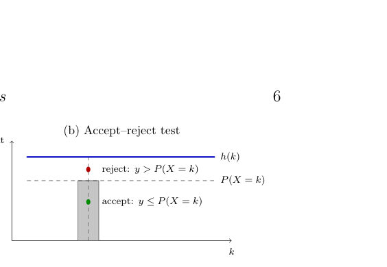
<figcaption class="paper-figure-caption"><b>Fig 1.</b> Figure 1. Schematic illustration of the BTPE algorithm. The grey bars represent the exact binomial probabilities, while the blue line represents the proposal envelope. In panel (a), the envelope is divided into one central triangular region, one parallelogram on each side, and two outer exponential tails; the colours and labels distinguish these five regions. In panel (b), a candidate point (k, y) is sampled under the envelope. At the selected value of k, the candidate is accepted if y ≤P(X = k) and rejected otherwise.</figcaption>
</figure>
<figure class="paper-figure-card">

<figcaption class="paper-figure-caption"><b>Fig 2.</b> Figure 2. Wall-clock runtime as a function of the shot budget S at n = 10 qubits, with one panel per state type (Random depth-10, Uniform, GHZ, W). Each marker is the mean over 50 independent repeats for the count-level methods (NumPy multinomial and the three SeqBin backends) and 10 repeats for the Qiskit primitives; error bars show one standard deviation and are visible mainly for the fastest methods on the sparse states. SeqBin–Numba was run once on a small input before timing began, and each Qiskit sampler was instantiated and run twice before the first timed call, so the reported numbers exclude one-time compilation and transpilation costs.</figcaption>
</figure>
<figure class="paper-figure-card">

<figcaption class="paper-figure-caption"><b>Fig 3.</b> Figure 3. Wall-clock runtime as a function of the number of qubits n at fixed shot budget S = 106. The count-level methods (NumPy multinomial and the three SeqBin backends) are timed over 50 repeats and the Qiskit primitives over 10, with two warmup calls each. Qiskit StatevectorSampler is omitted for n ≥16 at this shot budget, due to memory issues.</figcaption>
</figure>
<figure class="paper-figure-card">

<figcaption class="paper-figure-caption"><b>Fig 4.</b> Figure 4. Runtime at n = 10, S = 105, separated by state type (Random depth-10, Uniform, GHZ, W). Bars are the mean over 50 repeats for NumPy multinomial and the three SeqBin backends, and 10 repeats for the Qiskit primitives; whiskers show one standard deviation.</figcaption>
</figure>
<figure class="paper-figure-card">

<figcaption class="paper-figure-caption"><b>Fig 5.</b> Figure 5. How far each sampler lands from the exact distribution, measured by L1 of Eq. (11), against the number of qubits n, for the random depth-10 state. The three bands are three shot budgets: S = 104 (top), 105, and 106 (bottom). Lower is closer to exact. All six methods coincide in every band, so no method is closer to or further from the exact distribution than any other; the bands are separated by the shot budget rather than by the method. Markers follow the convention of the earlier figures: open circles (NumPy multinomial and SeqBin–SciPy), triangles (SeqBin–Python and SeqBin–Numba), squares (Qiskit). Each value is averaged over 50 independent draws, 10 for the Qiskit primitives.</figcaption>
</figure>
</div>

<p><strong>Summary.</strong> This paper addresses the computational bottleneck in simulating quantum circuits by proposing a count-level multinomial sampling method. Instead of simulating each shot individually, it directly samples the final count vector from the multinomial distribution. This approach drastically reduces computational cost, making large-scale classical simulations feasible by decoupling the runtime from the total number of shots.</p>
<p><strong>Why it may be interesting.</strong> While focused on quantum computation, the core contribution is a highly efficient, mathematically rigorous numerical technique for sampling from high-dimensional probability distributions, which has broad applicability in simulating complex physical systems.</p>
<details>
<summary>Detailed structure</summary>
<p><strong>Main problem.</strong> Classical simulation of quantum circuits requires sampling measurement outcomes (shots) from the final state's probability distribution, a process that is computationally expensive.</p>
<p><strong>Main result.</strong> A novel count-level multinomial sampling technique, independent of the number of shots ($S$), is significantly faster than standard shot-by-shot sampling methods, achieving speedups exceeding $10^3$ for large $S$.</p>
<p><strong>Method.</strong> The authors propose drawing the measurement count vector directly from a multinomial distribution using a sequence of conditional binomial draws, optimized by grouping rare outcomes.</p>
<p><strong>Model / system.</strong> The work focuses on simulating quantum circuits classically, where the final state defines a probability distribution over $D=2^n$ possible measurement outcomes.</p>
<p><strong>Key observables.</strong> Measurement counts ($\mathbf{k}$), L1 distance, Pearson $\chi^2$ test statistics.</p>
<p><strong>Important parameters / regimes.</strong> Number of shots ($S$), number of qubits ($n$), number of outcomes ($D=2^n$).</p>
<p><strong>Assumptions / limitations.</strong> The comparison assumes that the primary bottleneck in existing software is the per-shot processing of bitstrings, not the underlying sampling math.</p>
<p><strong>Figures summary.</strong> Figures illustrate the BTPE algorithm for binomial sampling and compare the runtimes of full quantum circuit samplers versus direct multinomial draws.</p>
<p><strong>Paper structure.</strong> The paper first identifies the scaling bottleneck of shot-by-shot sampling, then introduces the count-level multinomial approach via conditional binomial draws, details optimizations like rare-outcome bunching, and concludes with extensive benchmarking against state-of-the-art quantum software libraries.</p>
</details>
<details>
<summary>Abstract</summary>
<p>In classical simulations of quantum circuits, sampling shots (measurement outcomes) from the final state is a routine but costly step. In widely used software, including Qiskit and PennyLane, its cost grows linearly with the number of shots $S$, even when the simulation has already produced the full state vector, because every shot is generated and processed individually. If only the measurement counts are needed, this is unnecessary. The counts can be drawn directly from a multinomial distribution, decomposed into a sequence of conditional binomial draws, each performed in expected constant time by the BTPE algorithm. The sampling cost is then independent of $S$. We describe an implementation of this approach, which also shortens the computation for states whose probability is concentrated on a few outcomes, and compare it with Qiskit's sampling primitives for up to 20 qubits and $10^6$ shots. Our implementation is faster in every configuration tested, by a factor that grows with the number of shots and exceeds $10^3$ in most configurations at $S = 10^6$, and its samples are statistically indistinguishable from those of the reference implementations.</p>
</details>
<p><sub><a href="#top">↑ back to top</a></sub></p>

<p><a id="paper-2610.34664"></a></p>
<h3 id="reference-state-dependence-and-interface-scaling-of-superfluid-response-in-a-two-dimensional-crystal"><a href="http://arxiv.org/abs/2610.34664v1">Reference-state dependence and interface scaling of superfluid response in a two-dimensional crystal</a></h3>
<p><strong>Authors:</strong> Néstor Sepúlveda<br>
<strong>Type:</strong> theory · <strong>Category:</strong> statistical mechanics · <strong>PDF:</strong> <a href="https://arxiv.org/pdf/2610.34664v1">https://arxiv.org/pdf/2610.34664v1</a><br>
<strong>Analysis basis:</strong> full PDF text, analyzed in chunks
<strong>Topic relevance:</strong> <code>analog quantum simulation</code> <strong>2/5</strong> · <code>Frenkel-Kontorova</code> <strong>1/5</strong> · <code>Keldysh / 2PI / non-Gaussian methods</code> <strong>1/5</strong> · <code>methods for driven-dissipative</code> <strong>1/5</strong></p>
<div class="figure-strip-hint">↔ Scroll figures horizontally</div>
<div class="paper-figures-scroll">
<figure class="paper-figure-card">

<figcaption class="paper-figure-caption"><b>Fig 1.</b> FIG. 1. Density and local phase stiffness of relaxed bicrystals. Columns show ρ on the linear scale [0, 14], ex, and ey; stiffness uses log10(ej/n0) ∈[−7, 0]. Rows 1–2 show the 30◦family at L = 128; rows 3–4 show the low-angle family at L = 256, with final misorientation 15.75◦. Dashed boxes locate the 32 × 32 zoom windows. Red circles mark non-sixfold coordination. Fields are shown without smoothing; stationary residuals are 9.99 × 10−9 and 5.93 × 10−11.</figcaption>
</figure>
<figure class="paper-figure-card">

<figcaption class="paper-figure-caption"><b>Fig 2.</b> FIG. 2. Directional excess and bulk-reference dependence for thirty-two independently prepared bicrystals. Symbols show size means; error bars describe preparation resampling. Panel (a) uses the recommended strain- and chemical-potential-matched reference; both diagonal excesses are positive. Panel (b) includes that reference as a dashed black curve with open circles, nearly coincident with the native-density curve. Different bulk conventions define different excess observables.</figcaption>
</figure>
<figure class="paper-figure-card">

<figcaption class="paper-figure-caption"><b>Fig 3.</b> FIG. 3. Microscopic transport and reference-controlled response. (a) Inter-peak density in grain interiors and boundary regions; the line is the empirical interior fit over its sampled range. (b) Diagonal network and GP stiffnesses at Λ = 128.68, with one calibrated coupling constant. (c) Ratio of the mean stiffness changes produced by halving equal numbers of boundary and interior couplings on each fixed network; labels give angle and box side. (d) GP excess relative to strain- and chemical-potential-matched composites for two paired preparations across interaction strengths. Connecting lines identify the same preparation branch.</figcaption>
</figure>
<figure class="paper-figure-card">

<figcaption class="paper-figure-caption"><b>Fig 4.</b> FIG. 4. Preparation-specific coefficients under different bulk conventions and their association with crystalline structure. Error bars show preparation resampling; correlations are evaluated within size.</figcaption>
</figure>
<figure class="paper-figure-card">

<figcaption class="paper-figure-caption"><b>Fig 5.</b> FIG. 5. Interface scaling with comparable grain interiors. (a) Individual physical excesses with proportional and quadratic fits. (b) Directional size-mean effective coefficients; error bars are resampling summaries over three to five states per size.</figcaption>
</figure>
</div>

<p><strong>Summary.</strong> This theoretical work investigates the superfluid stiffness in 2D soft-core Bose crystals containing grain boundaries. By using tensor response formalism, the authors develop a method to isolate the true contribution of the boundaries from bulk material variations. The findings provide a quantitative protocol for analyzing superfluid transport in defective quantum materials.</p>
<p><strong>Why it may be interesting.</strong> The rigorous quantification of boundary effects in superfluid systems, particularly the sensitivity to reference state definitions, is crucial for accurately modeling real-world, imperfect quantum materials.</p>
<details>
<summary>Detailed structure</summary>
<p><strong>Main problem.</strong> The paper aims to quantify the contribution of grain boundaries to the superfluid stiffness in a two-dimensional crystal and determine how this contribution depends on the chosen reference state.</p>
<p><strong>Main result.</strong> The authors establish a quantitative comparison protocol that successfully distinguishes boundary enhancement from changes in the surrounding crystal, recommending a strain- and chemical-potential-matched composite as the best reference state.</p>
<p><strong>Method.</strong> The study employs the tensor response formalism applied to a soft-core Gross-Pitaevskii (GP) crystal, comparing measured grain stiffness to bulk composites derived using various reference conventions.</p>
<p><strong>Model / system.</strong> The system is a superfluid confined in a two-dimensional soft-core Gross-Pitaevskii (GP) crystal, modeled by a nonlocal GP Hamiltonian. The analysis focuses on bicrystals containing grain boundaries.</p>
<p><strong>Key observables.</strong> Superfluid stiffness tensor (f_s or K), grain boundary enhancement ($\Delta \mathbf{K}$), interface length ($\ell$), and the effective half-trace coefficient ($\Gamma_{K, 	ext{eff}}$).</p>
<p><strong>Important parameters / regimes.</strong> Lattice spacing changes (1% variation), interaction strengths, and the geometry of the grain boundaries.</p>
<p><strong>Assumptions / limitations.</strong> The superfluid stiffness is not treated as a Gibbs surface excess, and the comparison relies on matching mechanical geometry (strain) and particle-exchange conditions (chemical potential).</p>
<p><strong>Figures summary.</strong> Figures illustrate density and local phase stiffness in relaxed bicrystals, showing directional excess and bulk-reference dependence across different preparation methods.</p>
<p><strong>Paper structure.</strong> The paper progresses by defining the superfluid stiffness using tensor response, quantifying the excess contribution ($\Delta \mathbf{K}$), comparing results across various bulk reference states (e.g., fixed-mass vs. $\mu$-matched), and concluding with a robust protocol for separating boundary effects.</p>
</details>
<details>
<summary>Abstract</summary>
<p>Grain boundaries modify both transport paths and the surrounding crystal, making their contribution to superfluid stiffness difficult to isolate. We quantify these contributions in stationary two-dimensional soft-core Gross--Pitaevskii (GP) crystals using tensor response, independently prepared bicrystals, and measured interface lengths. A one-percent change of lattice spacing alters the bulk stiffness by approximately 5--9\%, comparable to the boundary contribution. For the same defective state, two bulk references give relative excesses of 0.027\% and 4.15\%. Matching the comparator to grain strain and chemical potential yields positive diagonal excesses in paired preparations at three interaction strengths. Within a twelve-state family with comparable grain interiors, the excess is robust to 288 bulk substitutions and follows an approximate length-per-area relation. Independent fixed-area pairs yield a line-response coefficient 3.1\% higher than the three-size estimate. Size and directional dependence restrict this relation to the specified crystal conditions. Reduced link networks relate the directional response to the organization of boundary connections but do not accurately resolve every small bulk-subtracted excess. The results distinguish boundary enhancement from changes in the surrounding crystal and establish a quantitative comparison protocol for superfluid transport in defective crystals.</p>
</details>
<p><sub><a href="#top">↑ back to top</a></sub></p>

<p><a id="paper-2610.34322"></a></p>
<h3 id="two-qubit-binegativity-can-increase-under-local-amplitude-damping"><a href="http://arxiv.org/abs/2610.34322v1">Two-qubit binegativity can increase under local amplitude damping</a></h3>
<p><strong>Authors:</strong> Xiao-Lan Zong, Wei Song, Ming Yang<br>
<strong>Type:</strong> theory · <strong>Category:</strong> quantum information and computing · <strong>PDF:</strong> <a href="https://arxiv.org/pdf/2610.34322v1">https://arxiv.org/pdf/2610.34322v1</a><br>
<strong>Analysis basis:</strong> full PDF text, analyzed in chunks
<strong>Topic relevance:</strong> <code>quantum measurements</code> <strong>2/5</strong> · <code>correlated / nonlocal dissipation</code> <strong>1/5</strong> · <code>driven-dissipative phase transition</code> <strong>1/5</strong> · <code>methods for driven-dissipative</code> <strong>1/5</strong></p>
<div class="figure-strip-hint">↔ Scroll figures horizontally</div>
<div class="paper-figures-scroll">
<figure class="paper-figure-card">

<figcaption class="paper-figure-caption"><b>Fig 1.</b> FIG. 1. Variation of the binegativity, negativity, and concur- rence with the damping probability when amplitude damp- ing is applied only to Alice’s qubit, starting from the state in Eq. (5) as the initial state. Each quantity is normal- ized by its respective initial value. The circle corresponds to η∗= 253/289, at which the binegativity is already higher than its initial value.</figcaption>
</figure>
</div>

<p><strong>Summary.</strong> This theoretical paper proves that the binegativity of two-qubit states is not an entanglement monotone under local operations. By constructing specific counterexamples involving local amplitude damping and local measurements, the authors demonstrate that the measure can increase, challenging current conjectures about entanglement preservation under realistic noise models.</p>
<p><strong>Why it may be interesting.</strong> This work directly impacts the understanding of entanglement measures, which is fundamental to quantum information theory and the characterization of quantum resources in open quantum systems.</p>
<details>
<summary>Detailed structure</summary>
<p><strong>Main problem.</strong> The paper challenges the conjecture that binegativity, a measure of entanglement, is an entanglement monotone under Local Operations and Classical Communication (LOCC) or Positive-Partial-Transpose-Preserving (PPT) channels.</p>
<p><strong>Main result.</strong> The authors provide counterexamples showing that applying local amplitude damping or performing local measurements can increase the binegativity of two-qubit states, thus violating the expected monotonicity.</p>
<p><strong>Method.</strong> The analysis involves constructing specific full-rank two-qubit states and applying known quantum channels, such as local amplitude damping, to calculate the change in binegativity.</p>
<p><strong>Model / system.</strong> The study focuses on two-qubit quantum states ($
ho$) and analyzes their evolution under local noise channels (amplitude damping) and local measurement protocols (LOCC).</p>
<p><strong>Key observables.</strong> Binegativity ($N_2(
ho)$), Negativity ($N(
ho)$), and Concurrence ($C(v)$).</p>
<p><strong>Important parameters / regimes.</strong> The damping probability ($\eta$) and a continuous parameter ($p$) used to construct the family of counterexamples.</p>
<p><strong>Assumptions / limitations.</strong> The counterexamples are constructed using specific state forms ($
ho^*$) and the analysis of the probability-weighted average over measurement branches.</p>
<p><strong>Figures summary.</strong> Figure 1 illustrates the variation of binegativity, negativity, and concurrence with the damping probability, showing an increase at a specific critical point.</p>
<p><strong>Paper structure.</strong> The paper first introduces the concept and the conjecture, then presents a concrete counterexample using amplitude damping on a full-rank state. Subsequently, it analyzes a continuous family of counterexamples under a one-way LOCC protocol, demonstrating the increase in the averaged binegativity.</p>
</details>
<details>
<summary>Abstract</summary>
<p>It has been conjectured that the binegativity of two-qubit states is an entanglement monotone. We present a full-rank state as a counterexample: applying amplitude damping to only one of the qubits can increase the binegativity of the state. The output state remains full rank, and the amount of increase can be calculated exactly. In addition, we construct a family of counterexamples that vary continuously with a parameter. In the corresponding one-way local operations and classical communication protocol, the probability-weighted average of the binegativity over the branches after the local measurement is also higher than that of the initial state.</p>
</details>
<p><sub><a href="#top">↑ back to top</a></sub></p>

<p><a id="paper-2610.35828"></a></p>
<h3 id="interference-induced-dynamical-crossovers-in-quantum-walks-on-disordered-square-lattices"><a href="http://arxiv.org/abs/2610.35828v1">Interference-induced dynamical crossovers in quantum walks on disordered square lattices</a></h3>
<p><strong>Authors:</strong> Ramnarayan Bera, Arijit Roy, Soumyadip Ghosh, Soumen Roy<br>
<strong>Type:</strong> theory · <strong>Category:</strong> disordered systems and neural networks · <strong>PDF:</strong> <a href="https://arxiv.org/pdf/2610.35828v1">https://arxiv.org/pdf/2610.35828v1</a><br>
<strong>Analysis basis:</strong> full PDF text, analyzed in chunks
<strong>Topic relevance:</strong> <code>analog quantum simulation</code> <strong>2/5</strong> · <code>interference shaping light</code> <strong>1/5</strong> · <code>non-equilibrium universality</code> <strong>1/5</strong></p>
<div class="figure-strip-hint">↔ Scroll figures horizontally</div>
<div class="paper-figures-scroll">
<figure class="paper-figure-card">

<figcaption class="paper-figure-caption"><b>Fig 1.</b> FIG. 1: Transport exponent β versus defect probability p for edges with different transmission coefficients f: (a) f = 0, (b) f = 0.25, (c) f = 0.50, (d) f = 0.75, and (e) f = 1.00. The panels compare classical random walks (CRWs) with discrete-time quantum walks (DTQWs) using the Fourier (FC), Grover (GC), and Hadamard (HC) coin operators.</figcaption>
</figure>
<figure class="paper-figure-card">

<figcaption class="paper-figure-caption"><b>Fig 2.</b> FIG. 2: Temporal evolution of the local transport exponent βlocal(t) for different defect probabilities p and transmission probabilities f. Panels (a)–(c) correspond to f = 0, (d)–(f) to f = 0.50, and (g)–(i) to f = 1.00 with defective edge probability written inside graphs. The curves compare quantum walks with Fourier (FC), Grover (GC), and Hadamard (HC) coins with the classical random walk (CRW).</figcaption>
</figure>
<figure class="paper-figure-card">

<figcaption class="paper-figure-caption"><b>Fig 3.</b> FIG. 3: Transport-regime maps in the (f, p) plane. (a) Regions classified by the measured exponent: β &lt; 1 indicates subdiffusive and β &gt; 1 superdiffusive spreading. The contour β = 1 marks the crossover within the fitting window. (b) The corresponding β = 1 contours for the Fourier, Grover, and Hadamard coins.</figcaption>
</figure>
<figure class="paper-figure-card">

<figcaption class="paper-figure-caption"><b>Fig 4.</b> FIG. 4: Mean transport exponent ⟨β⟩as a function of the transmission probability f for defect probabilities p = 0, 0.06, 0.50, 0.70, and 1.00 in panels (a), (c), (e), (g), and (i), respectively. The corresponding panels (b), (d), (f), (h), and (j) show the variance of bond transmission, σ2 T , for the same values of p.</figcaption>
</figure>
<figure class="paper-figure-card">

<figcaption class="paper-figure-caption"><b>Fig 5.</b> FIG. 5: Effective diffusion coefficient Deffas a function of the transmission probability f for defect probabilities p = 0, 0.06, 0.50, 0.70, and 1.00 in panels (a), (c), (e), (g), and (i), respectively. The corresponding panels (b), (d), (f), (h), and (j) show the average of bond transmission, ⟨T⟩, for the same values of p..</figcaption>
</figure>
</div>

<p><strong>Summary.</strong> This paper investigates how quantum interference affects transport in disordered 2D lattices by comparing quantum walks to classical random walks. It finds that quantum transport decays dynamically towards localization, a behavior fundamentally different from classical diffusion. The work maps out the phase space governing these crossovers using various disorder parameters and coin symmetries.</p>
<p><strong>Why it may be interesting.</strong> The clear distinction between quantum and classical transport scaling in the presence of disorder, particularly the evidence for localization driven by interference, is highly relevant to understanding wave propagation in disordered photonic or electronic structures.</p>
<details>
<summary>Detailed structure</summary>
<p><strong>Main problem.</strong> The study compares the transport dynamics of quantum walks versus classical random walks on disordered lattices to understand the role of quantum interference in transport resilience.</p>
<p><strong>Main result.</strong> Quantum walks exhibit a monotonically decaying transport exponent, suggesting a tendency towards Anderson localization in 2D, unlike classical walks which maintain stable diffusion exponents.</p>
<p><strong>Method.</strong> The analysis uses time-dependent diagnostics like the transport exponent ($eta(t)$) and Inverse Participation Ratio (IPR) to characterize spreading rates in the bulk propagation regime.</p>
<p><strong>Model / system.</strong> The system is a discrete-time quantum walk on a 2D square lattice, incorporating disorder via partially transmitting edges ($f$) with probability $p$. Three coin operators (Fourier, Grover, Hadamard) are tested.</p>
<p><strong>Key observables.</strong> Transport exponent $eta(t)$, Effective Diffusion Coefficient ($D_{eff}$), Inverse Participation Ratio (IPR), and the $eta=1$ contour separating super- and subdiffusive regimes.</p>
<p><strong>Important parameters / regimes.</strong> Disorder probability ($p$), transmission coefficient ($f$), and the specific coin operator used.</p>
<p><strong>Assumptions / limitations.</strong> The analysis is restricted to bulk propagation before finite-size boundary reflections, and the observed $eta=1$ contour is interpreted as a finite-time crossover, not a true phase transition.</p>
<p><strong>Figures summary.</strong> Figures map the transport regimes ($eta$ vs. $f, p$ plane) and show the temporal evolution of the local transport exponent $eta_{	ext{local}}(t)$ for different disorder strengths.</p>
<p><strong>Paper structure.</strong> The paper first compares quantum and classical transport on binary-percolated lattices, then generalizes to partially transmitting edges, analyzing the resulting transport regimes and highlighting the dependence on coin symmetry.</p>
</details>
<details>
<summary>Abstract</summary>
<p>We study discrete-time quantum walks with Fourier, Grover, and Hadamard coin operators on disordered square lattices, alongside classical random walks. Edges in the lattice are absent with a probability, $p$. In this case, both classical and quantum walks exhibit an essentially identical degradation of transport. We then study a general version of this model, in which the existing edges are retained. However, the absent edges are no longer absent, but now become partially transmitting, with a transmission coefficient $f$. We find that the response is now quite sensitive to the walk protocol and coin symmetry. The classical walk exhibits asymptotic stability of the anomalous diffusion exponent, $β(t)$. In comparison, quantum walks exhibit a monotonically decaying $β(t)$ beyond the initial transient regime, leading to the absence of quantum diffusion in two dimensions. We map the transport regimes in the $(f,p)$ plane and identify the contour for $β=1$, which separates the subdiffusive and superdiffusive regimes. We also examine the effective diffusion coefficient, the inverse participation ratio, and the first two moments of edge transmission. We restrict ourselves to analyzing bulk propagation prior to finite-size boundary reflections. The results indicate that quantum transport depends significantly on coin-specific interference and cannot be fully described by transmission statistics alone.</p>
</details>
<p><sub><a href="#top">↑ back to top</a></sub></p>

<p><a id="paper-2610.34506"></a></p>
<h3 id="model-uncertainty-aware-digital-twins-for-non-markovian-quantum-repeater-memories"><a href="http://arxiv.org/abs/2610.34506v1">Model-Uncertainty-Aware Digital Twins for Non-Markovian Quantum Repeater Memories</a></h3>
<p><strong>Authors:</strong> Muhammad Waqas Haseeb<br>
<strong>Type:</strong> theory · <strong>Category:</strong> quantum information and computing · <strong>PDF:</strong> <a href="https://arxiv.org/pdf/2610.34506v1">https://arxiv.org/pdf/2610.34506v1</a><br>
<strong>Analysis basis:</strong> full PDF text, analyzed in chunks
<strong>Topic relevance:</strong> <code>quantum measurements</code> <strong>2/5</strong> · <code>correlated / nonlocal dissipation</code> <strong>1/5</strong> · <code>methods for driven-dissipative</code> <strong>1/5</strong></p>
<div class="figure-strip-hint">↔ Scroll figures horizontally</div>
<div class="paper-figures-scroll">
<figure class="paper-figure-card">

<figcaption class="paper-figure-caption"><b>Fig 1.</b> Fig. 1. QMemTwin workflow and evaluation regimes. Sparse quadrature/population measurements calibrate passive candidates. AICc weights adapt complexity, a temporal-holdout gate determines model support, and only supported physical trajectories are exposed as network-facing fidelity, concurrence, uncertainty, and service windows. The higher-order family tests capacity mismatch; the nonstationary family is the structural-shift test.</figcaption>
</figure>
<figure class="paper-figure-card">

<figcaption class="paper-figure-caption"><b>Fig 2.</b> Fig. 2. Representative trajectories for all six families. Sparse points end at Tobs = 6; shading denotes forecasting. The final row is structurally nonstationary and is used to test the adequacy gate, not to claim universal extrapolation. Negative exact time-local rates identify information-backflow intervals.</figcaption>
</figure>
<figure class="paper-figure-card">

<figcaption class="paper-figure-caption"><b>Fig 3.</b> Fig. 3. Prediction and adaptive-complexity audit: supported-family errors, paired 95% intervals, AICc weights, sequential forecast error, and raw/projected TTM. Detailed six-panel source figures remain in the artifact.</figcaption>
</figure>
<figure class="paper-figure-card">

<figcaption class="paper-figure-caption"><b>Fig 4.</b> Fig. 4. Adequacy, robustness, and uncertainty: support-score separation, structural-shift ROC/confusion, observation/noise sensitivity, bootstrap trajectory, and empirical coverage.</figcaption>
</figure>
<figure class="paper-figure-card">

<figcaption class="paper-figure-caption"><b>Fig 5.</b> Figure 5 reports calibration cost versus accuracy. TTM- RAW is fast but exhibits catastrophic extrapolation in 2 of 40 supported cases: its mean population RMSE is 135.945, median 0.02479, and maximum 5329.0. The radial projection removes channel-domain violations and reduces mean error to 0.06742, but it is a post-hoc feasibility repair, not a guarantee that the recovered memory kernel is correct. Matrix pencil is also fast and competitive in several multi- exponential cases, but its pole truncation and stability projection degrade continuum/coupled cases. The representative inverse- PINN subset demonstrates that a neural baseline can fit some trajectories but does not supply the passivity...</figcaption>
</figure>
</div>

<p><strong>Summary.</strong> This paper introduces QMemTwin, a model-uncertainty-aware digital twin designed to estimate the evolution of entanglement in quantum repeater memories. It combines multiple candidate passive state-space models using weighted averaging and incorporates a safety gate to detect when the true dynamics fall outside the modeled family. The results demonstrate superior accuracy and robustness compared to simpler models, particularly in complex, non-Markovian network scenarios.</p>
<p><strong>Why it may be interesting.</strong> This work directly addresses the practical challenges of quantum networking by providing a statistically rigorous and physically constrained tool to estimate quantum channel parameters under uncertainty, which is vital for scaling quantum communication.</p>
<details>
<summary>Detailed structure</summary>
<p><strong>Main problem.</strong> Quantum-repeater controllers require reliable estimates of stored entanglement evolution, especially when the underlying memory dynamics are non-Markovian and subject to model uncertainty.</p>
<p><strong>Main result.</strong> The proposed QMemTwin significantly reduces estimation errors (RMSE) compared to standard methods in supported memory regimes and provides a crucial safety mechanism (temporal-holdout gate) to abstain when dynamics are unsupported.</p>
<p><strong>Method.</strong> The authors developed QMemTwin, a digital twin that calibrates a bank of contractive passive state-space models and combines their predictions using finite-sample-corrected Akaike weights.</p>
<p><strong>Model / system.</strong> The system models quantum memories storing entangled Bell pairs, whose evolution is governed by non-Markovian dynamics. The methodology relies on characterizing the evolution using passive, contractive state-space models.</p>
<p><strong>Key observables.</strong> Population RMSE, Bell-fidelity RMSE, qualified goodput (pairs/slot), and the detection rate of structural shifts.</p>
<p><strong>Important parameters / regimes.</strong> The analysis covers various memory regimes, including single-pole, multi-pole, and coupled cases, and evaluates performance across 2-, 4-, and 8-link repeater chains.</p>
<p><strong>Assumptions / limitations.</strong> The method assumes the existence of a finite bank of candidate passive models and uses a temporal-holdout gate to manage model uncertainty and detect structural mismatches.</p>
<p><strong>Figures summary.</strong> Figures illustrate the QMemTwin workflow, comparing performance metrics (RMSE, goodput) across different memory families, and showing the efficacy of the adequacy gate in detecting structural shifts.</p>
<p><strong>Paper structure.</strong> The paper introduces the problem, details the QMemTwin methodology (calibration, weighting, gate), presents quantitative comparisons against existing controllers (2PM), and concludes with performance analysis in multi-hop quantum network simulations.</p>
</details>
<details>
<summary>Abstract</summary>
<p>Quantum-repeater controllers need reliable estimates of stored entanglement as adjacent links are generated. Fixed exponential lifetimes miss non-Markovian revivals, while complex surrogates are unnecessary when the microscopic family is known. We present QMemTwin, a physics-constrained digital twin that accounts for model uncertainty. It calibrates a bank of contractive passive state-space models, combines their amplitudes with finite-sample-corrected Akaike weights, and abstains when temporal-holdout data indicate unsupported dynamics. Passivity guarantees a completely positive, trace-preserving amplitude-damping channel for each candidate and their convex amplitude average. We evaluate [N cases] synthetic memories: [N supported] supported passive time-invariant cases and [N structural] nonstationary structural-shift cases. In the matched one-pseudomode regime, the correctly specified one-pseudomode fit performs best. Across [N unknown] supported cases with uncertain families, QMemTwin reduces population RMSE by [population reduction]% and Bell-fidelity RMSE by [Bell reduction]% relative to the two-pseudomode model; both paired effects remain significant after Holm correction. The flexible passive model has a slightly lower mean error for unknown families but is statistically indistinguishable from QMemTwin and loses accuracy in the matched regime. The temporal-holdout gate detects [detection]% of structural shifts, with [false alarm]% false alarms on supported families and AUROC [AUC]. In 2-, 4-, and 8-link repeater chains, the mixed cohort shows no significant 8-link goodput gain. A predeclared high-backflow stress cohort yields an 8-link goodput gain of [goodput gain]% over the two-pseudomode model, with paired p = [p value]. These results favor using a known family when available, accounting for model uncertainty otherwise and abstaining on unsupported dynamics.</p>
</details>
<p><sub><a href="#top">↑ back to top</a></sub></p>

<p><a id="paper-2610.33378"></a></p>
<h3 id="semiclassical-dynamics-of-higher-order-squeezing-self-adjoint-extensions-and-coherent-returns"><a href="http://arxiv.org/abs/2610.33378v1">Semiclassical dynamics of higher-order squeezing: self-adjoint extensions and coherent returns</a></h3>
<p><strong>Authors:</strong> A. E. Teretenkov<br>
<strong>Type:</strong> theory · <strong>Category:</strong> other · <strong>PDF:</strong> <a href="https://arxiv.org/pdf/2610.33378v1">https://arxiv.org/pdf/2610.33378v1</a><br>
<strong>Analysis basis:</strong> full PDF text, analyzed in chunks
<strong>Topic relevance:</strong> <code>quantum measurements</code> <strong>2/5</strong> · <code>Keldysh / 2PI / non-Gaussian methods</code> <strong>1/5</strong> · <code>methods for driven-dissipative</code> <strong>1/5</strong></p>
<div class="figure-strip-hint">↔ Scroll figures horizontally</div>
<div class="paper-figures-scroll">
<figure class="paper-figure-card">

<figcaption class="paper-figure-caption"><b>Fig 1.</b> Fig. 1 Quantum Husimi density (a, c) and classical transport with coherent Liouville amplitudes (b, d), for Eq. (56). The times are 0.5486913 (a, b) and 1.4573807 (c, d); k = 3, ℏ= 0.0025, U = −13, cutoff action 384. All panels have the same logarithmic scale, blank below 0.01, without window renormalization. Table 1 illustrates the radial cutoff dependence</figcaption>
</figure>
<figure class="paper-figure-card">

<figcaption class="paper-figure-caption"><b>Fig 2.</b> Fig. 2 Full-angular-sector probabilities at the first (a) and second (b) times of Fig. 1, with unrestricted radial integration. Quantum evolution and coherent Liouville transport are compared with Markov gluing. The limiting first-pass weights coincide; after the second passage coherent weights are (0, 0, 1), while Markov weights are (8/27, 8/27, 11/27)</figcaption>
</figure>
</div>

<p><strong>Summary.</strong> This theoretical paper investigates the semiclassical dynamics of quantum systems described by higher-order squeezing Hamiltonians whose classical paths blow up in finite time. It rigorously determines the required self-adjoint extensions by relating quantum propagation to classical boundary amplitudes. The key finding is that the quantum probability measure concentrates on outgoing classical branches, revealing a coherent evolution structure beyond simple stochastic mixing.</p>
<p><strong>Why it may be interesting.</strong> This work provides rigorous mathematical tools for understanding quantum dynamics in regimes where standard semiclassical approximations fail due to finite-time singularities, which is crucial for modeling complex quantum optical or many-body interactions.</p>
<details>
<summary>Detailed structure</summary>
<p><strong>Main problem.</strong> The paper analyzes the semiclassical dynamics of higher-order squeezing Hamiltonians, specifically addressing the mathematical necessity of defining self-adjoint extensions because classical trajectories escape to infinity in finite time.</p>
<p><strong>Main result.</strong> The full Husimi probability measure converges to point masses on outgoing classical branches after the first passage through infinity, and for positive energy, amplitudes evolve by powers of the unitary ray matrix, not by iterations of its squared-modulus matrix.</p>
<p><strong>Method.</strong> The analysis combines relating extension problems via boundary amplitudes, using a discrete Fourier transformation to find a sink-to-source ray matrix, and employing Gaussian matching techniques.</p>
<p><strong>Model / system.</strong> The system is governed by a higher-order squeezing Hamiltonian, $H_k(q, p)$, whose classical dynamics lead to finite-time escape. The quantum dynamics are analyzed using the Liouville operator and coherent state propagation.</p>
<p><strong>Key observables.</strong> Husimi probability measure, boundary amplitudes, sink-to-source ray matrix, and coherent state evolution $\psi_{\hbar}(t)$.</p>
<p><strong>Important parameters / regimes.</strong> Squeezing order $k > 2$, energy $c$, and the semiclassical parameter $\hbar$.</p>
<p><strong>Assumptions / limitations.</strong> The proof relies on constructing approximate solutions satisfying the exact extension boundary condition, and the analysis distinguishes deterministic classical gluings from coherent boundary mixing.</p>
<p><strong>Figures summary.</strong> Figures compare the quantum Husimi density to classical transport using coherent Liouville amplitudes, showing how the limiting first-pass weights match between quantum and coherent classical descriptions.</p>
<p><strong>Paper structure.</strong> The paper progresses by defining the Hamiltonian and the problem of self-adjoint extensions, developing the semiclassical machinery using ray matrices and Gaussian matching, and finally establishing the limiting behavior of the quantum measure compared to classical transport.</p>
</details>
<details>
<summary>Abstract</summary>
<p>Higher-order squeezing Hamiltonians have several self-adjoint realizations, while their classical trajectories reach infinity in finite time. We relate these extension problems through boundary amplitudes and the semiclassical propagation of coherent states. A discrete Fourier transformation gives the sink-to-source ray matrix of each quantum realization. After the first passage through infinity, the full Husimi probability measure converges to point masses on outgoing classical branches, with weights equal to the squared moduli of the matrix entries. The proof combines finite-order approximate tail solutions satisfying the exact extension boundary condition with full-norm Gaussian matching and a square-summable residual estimate. For positive energy, we determine the limit after any fixed number of passages: amplitudes evolve by powers of the unitary ray matrix, not by iterations of its squared-modulus matrix. We also realize these limits by concentrated complex amplitudes for an energy-preserving Liouville extension, distinguishing deterministic classical gluings from coherent boundary mixing.</p>
</details>
<p><sub><a href="#top">↑ back to top</a></sub></p>

<p><a id="paper-2610.33532"></a></p>
<h3 id="designing-quantum-solutions-to-the-closest-string-problem-with-the-non-variational-qwoa"><a href="http://arxiv.org/abs/2610.33532v1">Designing Quantum Solutions to the Closest String Problem with the Non-Variational QWOA</a></h3>
<p><strong>Authors:</strong> Benjamin Rossdeutscher, Jingbo Wang<br>
<strong>Type:</strong> both · <strong>Category:</strong> quantum information and computing · <strong>PDF:</strong> <a href="https://arxiv.org/pdf/2610.33532v1">https://arxiv.org/pdf/2610.33532v1</a><br>
<strong>Analysis basis:</strong> full PDF text, analyzed in chunks
<strong>Topic relevance:</strong> <code>QC/QI experiment</code> <strong>2/5</strong> · <code>quantum measurements</code> <strong>1/5</strong></p>
<div class="figure-strip-hint">↔ Scroll figures horizontally</div>
<div class="paper-figures-scroll">
<figure class="paper-figure-card">

<figcaption class="paper-figure-caption"><b>Fig 1.</b> FIG. 1: The full generalised circuit implementation of the NV-QWOA for the Closest String Problem, implementing the problem encoding, steps 1-4 as described, then measurement.</figcaption>
</figure>
<figure class="paper-figure-card">

<figcaption class="paper-figure-caption"><b>Fig 2.</b> FIG. 2: The section of the Hamming Distance circuit that marks whether each character in the solution and reference registers differ.</figcaption>
</figure>
<figure class="paper-figure-card">

<figcaption class="paper-figure-caption"><b>Fig 3.</b> FIG. 3: Shown is the implemented Hamming distance circuit, with QFT and inverse-QFT removed for brevity, performing Quantum Fourier Addition combined with an OR Gate, such that if a character represented by more than one qubit differs it is still encoded.</figcaption>
</figure>
<figure class="paper-figure-card">

<figcaption class="paper-figure-caption"><b>Fig 4.</b> FIG. 4: The Quantum State Comparator (main circuit diagram), as designed by Yuan et al. [20] is the top of the figure with specific implemented circuits of the Uk gates shown below. In the bottom left, an example of the implemented first half of the state comparator is shown, (which performs the comparison x1 &gt; x2) by applying the QFT unitary, applying phase shift Uj(− 2πx1 ⌈log2(n⌉+1−j)) (relabelled for clarity) in the bit-order reversed frequency bases iteratively from the LSB (j = 0) through the register and the added comparison qubit, then applying the QFT† unitary to return to the computational basis. In the bottom right, an example of our implemented second half of the state...</figcaption>
</figure>
<figure class="paper-figure-card">

<figcaption class="paper-figure-caption"><b>Fig 5.</b> FIG. 5: Shown are the p = 30 amplified state (purple), overlayed with the initial p=0 superposition state (blue) for n=3,4,5,6 demarcated as a,b,c,d respectively.</figcaption>
</figure>
</div>

<p><strong>Summary.</strong> This paper presents a quantum algorithm using the Non-Variational Quantum Walk Optimization Algorithm (NV-QWOA) to solve the computationally hard Closest String Problem. The authors provide an explicit, gate-level quantum circuit implementation and demonstrate that the algorithm effectively amplifies optimal solutions in simulations. This work advances the practical application of quantum walks to solve complex combinatorial optimization tasks.</p>
<p><strong>Why it may be interesting.</strong> While focused on optimization, the explicit gate-level implementation and the use of quantum walks for optimization provide valuable insights into mapping complex combinatorial problems onto quantum hardware architectures.</p>
<details>
<summary>Detailed structure</summary>
<p><strong>Main problem.</strong> The paper addresses the NP-Hard Closest String Problem, which requires finding a string minimizing the maximum Hamming distance to a set of reference strings.</p>
<p><strong>Main result.</strong> The proposed quantum algorithm consistently amplifies optimal and near-optimal solutions, achieving high measurement probabilities for the best candidates across simulated problem sizes.</p>
<p><strong>Method.</strong> They developed an end-to-end quantum implementation using the Non-Variational Quantum Walk Optimization Algorithm (NV-QWOA) within an automated quantum circuit workflow.</p>
<p><strong>Model / system.</strong> The model is a gate-based quantum circuit framework operating on a Hamming graph, utilizing one- or two-qubit gates to encode solutions and evaluate the objective function.</p>
<p><strong>Key observables.</strong> The primary observables are the total probability of measuring an optimal solution, the expectation value of the solution cost, and the circuit depth/qubit complexity.</p>
<p><strong>Important parameters / regimes.</strong> Key parameters include string length ($n$), number of reference strings ($m$), alphabet size ($k$), and the number of NV-QWOA iterations ($p$).</p>
<p><strong>Assumptions / limitations.</strong> The work assumes the feasibility of implementing the required reversible quantum gates and provides resource estimates for scaling, while acknowledging the need for larger-scale testing to prove quantum advantage.</p>
<p><strong>Figures summary.</strong> Figures illustrate the amplification of the optimal state probability over iterations ($p$) and show the convergence of the expected cost towards the minimum optimal cost for increasing string lengths.</p>
<p><strong>Paper structure.</strong> The paper outlines the problem formulation, details the automated quantum circuit construction for the objective function, implements the optimization using NV-QWOA, and presents resource estimates and simulation results.</p>
</details>
<details>
<summary>Abstract</summary>
<p>Quantum computing offers promising approaches to combinatorial optimization problems whose search spaces grow exponentially with problem size. The Closest String problem belongs to this category, which seeks a string that minimizes the maximum Hamming distance to any string in a given collection of reference strings. In this work, we present an end-to-end quantum implementation of the Closest String problem using the Non-Variational Quantum Walk Optimization Algorithm (NV-QWOA), evaluating its resource requirements and solution amplification capabilities. Our automated workflow converts arbitrary problem instances into quantum circuits expressed in one- or two-qubit gates that encode candidate solutions, evaluate the objective function, and apply NV-QWOA optimisation to increase the measurement probabilities of high-quality solutions. Analytical resource estimates yield a qubit complexity of $\mathcal{O}(nm\log k)$ and a circuit depth of $\mathcal{O}(pm\log^2 n + pn\log n)$, where $n$ is the string length, $m$ is the number of reference strings, $k$ is the alphabet size, and $p$ is the number of NV-QWOA iterations. We introduce a revised prescription for the phase-separation parameter, $γ$, that depends on problem size but requires no instance-specific optimization. This prescription mitigates excessive phase wrapping modulo $2π$, which can weaken the relationship between objective values and the phases guiding the optimization dynamics. Across all simulated problem sizes, the algorithm consistently amplifies optimal and near-optimal candidates. This work provides an explicit gate-level implementation, an improved phase-scaling method, and a foundation for hardware experiments and benchmarking against classical algorithms.</p>
</details>
<p><sub><a href="#top">↑ back to top</a></sub></p>
<hr>
<p>
<a href="index.html">← Index</a>
 · <a href="papers_03.html">← Previous</a> · <a href="papers_05.html">Next →</a>
</p>
<hr>

</body>
</html>
